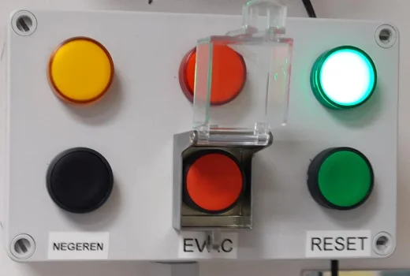
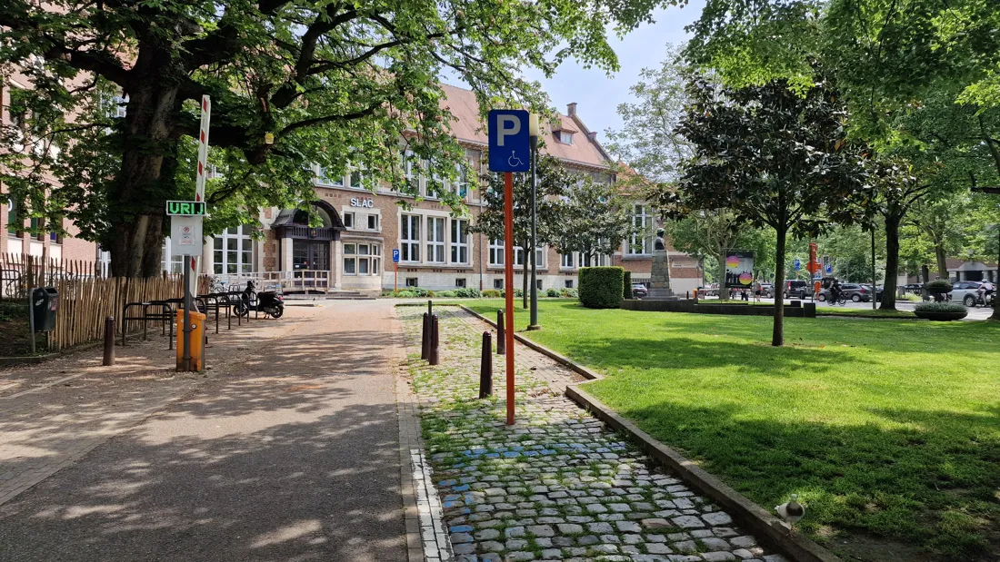
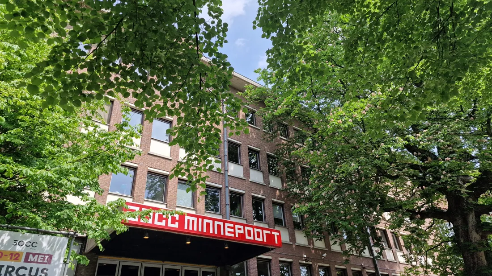

<!doctype html>
<html lang="nl"><head><meta charset="utf-8">
<meta name="viewport" content="width=device-width,initial-scale=1,viewport-fit=cover">
<title>Opleiding Brandveiligheid</title>
<meta name="theme-color" content="#b3121b">
<link rel="icon" href="favicon.svg" type="image/svg+xml">
<meta name="robots" content="noindex">
<style>:root{color-scheme:light;box-sizing:border-box;padding-top:env(safe-area-inset-top,0px);padding-bottom:env(safe-area-inset-bottom,0px)}html{scroll-padding-top:env(safe-area-inset-top,0px)}body{margin:0;padding:0;font:14px -apple-system,BlinkMacSystemFont,sans-serif;background:#fff;color:#000}img{max-width:100%}[hidden]:not([hidden=until-found i]){display:none!important}</style>
</head><body>
<link rel="preconnect" href="https://fonts.googleapis.com">
<link rel="stylesheet" href="https://fonts.googleapis.com/css2?family=Atkinson+Hyperlegible:wght@400;700&family=Barlow+Semi+Condensed:wght@600;700&display=swap">
<style id="main-css">
/* Layout: app shell. Phone = header + scrolling content + bottom tab bar. PC = sidebar nav + content column. */
:root{
  --bg:#f6f4f3; --surface:#ffffff; --fg:#1d1a1a; --muted:#6b6262; --line:#e4dedc;
  --red:#b3121b; --red-soft:#fbe9e8; --on-red:#ffffff;
  --green:#0a7d3e; --green-soft:#e5f3ea;
  --amber:#8a5a00; --amber-soft:#fff3d6;
  --scope-all:#4b5563; --scope-site:#7a3e8f; --scope-ward:#b3121b;
  --font-display:"Barlow Semi Condensed","Arial Narrow",system-ui,sans-serif;
  --font-body:"Atkinson Hyperlegible",system-ui,-apple-system,"Segoe UI",sans-serif;
  --r:12px;
}
@media (prefers-color-scheme: dark){:root:not([data-theme="light"]){
  --bg:#151213; --surface:#1f1b1c; --fg:#f1ecea; --muted:#a89e9c; --line:#352f30;
  --red:#e2454c; --red-soft:#3a1a1c; --on-red:#ffffff;
  --green:#3fbf76; --green-soft:#16301f; --amber:#f0c060; --amber-soft:#3a2e12;
  --scope-all:#a3acb9; --scope-site:#c48fd6; --scope-ward:#ff7a80; color-scheme:dark}}
:root[data-theme="dark"]{
  --bg:#151213; --surface:#1f1b1c; --fg:#f1ecea; --muted:#a89e9c; --line:#352f30;
  --red:#e2454c; --red-soft:#3a1a1c; --on-red:#ffffff;
  --green:#3fbf76; --green-soft:#16301f; --amber:#f0c060; --amber-soft:#3a2e12;
  --scope-all:#a3acb9; --scope-site:#c48fd6; --scope-ward:#ff7a80; color-scheme:dark}
*{box-sizing:border-box}
html,body{height:100%}
body{background:var(--bg);color:var(--fg);font-family:var(--font-body);font-size:16px;line-height:1.5}
h1,h2,h3{font-family:var(--font-display);text-wrap:balance;line-height:1.15;margin:0}
h1{font-size:1.75rem} h2{font-size:1.35rem} h3{font-size:1.1rem}
p{margin:0}
button{font:inherit;color:inherit}
:focus-visible{outline:3px solid var(--red);outline-offset:2px;border-radius:6px}
img{display:block;max-width:100%}

/* header */
.top{position:sticky;top:env(safe-area-inset-top,0px);z-index:20;background:var(--red);color:var(--on-red);padding:10px 16px 12px}
.top-in{max-width:1100px;margin:0 auto;display:flex;align-items:center;gap:12px}
.logo{width:34px;height:34px;border-radius:8px;background:var(--on-red);color:#b3121b;display:grid;place-items:center;font-family:var(--font-display);font-weight:700;font-size:1.3rem;flex:none}
.where{flex:1;min-width:0;text-align:left;background:none;border:0;padding:4px 0;cursor:pointer}
.where small{display:block;white-space:nowrap;overflow:hidden;text-overflow:ellipsis;font-size:.78rem;opacity:.85;letter-spacing:.04em;text-transform:uppercase}
.where b{font-family:var(--font-display);font-size:1.2rem;display:flex;align-items:center;gap:6px;white-space:nowrap;overflow:hidden;text-overflow:ellipsis}
.where b::after{content:"";width:8px;height:8px;border-right:2px solid currentColor;border-bottom:2px solid currentColor;transform:rotate(45deg) translateY(-3px);flex:none}
.sos{flex:none;background:var(--on-red);color:#b3121b;border:0;border-radius:999px;padding:8px 14px;font-weight:700;cursor:pointer}

/* shell */
.shell{max-width:1100px;margin:0 auto;display:flex;gap:28px;padding-inline:16px;padding-block:20px 110px}
.side{display:none}
main{flex:1;min-width:0;display:flex;flex-direction:column;gap:18px}
.tabbar{position:fixed;left:0;right:0;bottom:0;z-index:20;background:var(--surface);border-top:1px solid var(--line);display:grid;grid-template-columns:repeat(5,1fr);padding:6px 4px calc(6px + env(safe-area-inset-bottom,0px))}
.tab{background:none;border:0;display:flex;flex-direction:column;align-items:center;gap:2px;font-size:.72rem;color:var(--muted);padding:6px 2px;cursor:pointer;border-radius:8px}
.tab svg{width:24px;height:24px}
.tab[aria-current="page"]{color:var(--red);font-weight:700}
@media (min-width:900px){
  .tabbar{display:none}
  .shell{padding-block:28px 48px}
  .side{display:flex;flex-direction:column;gap:4px;width:220px;flex:none;position:sticky;top:90px;align-self:flex-start}
  .side .tab{flex-direction:row;gap:12px;font-size:1rem;padding:10px 12px;justify-content:flex-start}
  .side .tab[aria-current="page"]{background:var(--red-soft)}
  .side .legend{margin-top:20px}
}

/* blocks */
.view{display:flex;flex-direction:column;gap:18px}
.view-head{display:flex;flex-direction:column;gap:6px}
.view-head p{color:var(--muted);max-width:62ch}
.card{background:var(--surface);border:1px solid var(--line);border-radius:var(--r);padding:16px;display:flex;flex-direction:column;gap:12px;min-width:0}
.card-head{display:flex;justify-content:space-between;align-items:flex-start;gap:10px;flex-wrap:wrap}
.scope{display:inline-block;flex:0 0 auto;align-self:flex-start;line-height:1.3;font-size:.7rem;font-weight:700;letter-spacing:.06em;text-transform:uppercase;padding:3px 8px;border-radius:999px;border:1.5px solid currentColor;white-space:nowrap}
.scope{display:none}.editmode .scope{display:inline-block}
.scope.all{color:var(--scope-all)} .scope.site{color:var(--scope-site)} .scope.ward{color:var(--scope-ward)}
.grid2{display:grid;gap:18px;grid-template-columns:1fr}
@media (min-width:700px){.grid2{grid-template-columns:1fr 1fr}}
ul.plain{margin:0;padding-left:1.2em;display:flex;flex-direction:column;gap:6px}
.muted{color:var(--muted)}

/* emergency */
.numbers{display:grid;grid-template-columns:1fr 1fr;gap:12px}
.num{background:var(--red);color:var(--on-red);border-radius:var(--r);padding:14px 16px;display:flex;flex-direction:column;gap:2px}
.num b{font-family:var(--font-display);font-size:2.6rem;line-height:1;font-variant-numeric:tabular-nums;user-select:all}
.num span{font-size:.9rem;opacity:.95}
.num.alt{background:var(--surface);color:var(--fg);border:2px solid var(--red)}
.num.alt b{color:var(--red)}
.num.acc.txt b{font-size:1.35rem;line-height:1.2;user-select:auto}
.num.acc{grid-column:1/-1;background:var(--surface);color:var(--fg);border:2px solid var(--green)}.num.acc b{color:var(--green)}
@media (min-width:700px){.numbers{grid-template-columns:repeat(auto-fit,minmax(0,1fr))}.num.acc{grid-column:auto}}
.alerts{display:flex;flex-direction:column;gap:8px}
.alert{display:flex;gap:10px;align-items:flex-start;background:var(--amber-soft);color:var(--fg);border-radius:10px;padding:10px 12px}
.alert>div{flex:1}
.alert i{font-style:normal;font-weight:700;color:var(--amber);flex:none;width:20px;text-align:center}
.steps{list-style:none;margin:0;padding:0;display:flex;flex-direction:column;gap:10px;counter-reset:s}
.step{background:var(--surface);border:1px solid var(--line);border-radius:var(--r);overflow:hidden}
.step>button{width:100%;display:flex;gap:14px;align-items:center;background:none;border:0;padding:14px 16px;text-align:left;cursor:pointer}
.step>button::before{counter-increment:s;content:counter(s);flex:none;width:34px;height:34px;border-radius:50%;background:var(--red);color:var(--on-red);display:grid;place-items:center;font-family:var(--font-display);font-weight:700;font-size:1.15rem}
.step-t{flex:1;min-width:0}
.step-t b{display:block;font-family:var(--font-display);font-size:1.15rem}
.step-t span{color:var(--muted);font-size:.9rem}
.chev{width:10px;height:10px;border-right:2px solid var(--muted);border-bottom:2px solid var(--muted);transform:rotate(45deg);transition:transform .2s;flex:none}
.step.open .chev{transform:rotate(-135deg)}
.step-body{padding:0 16px 16px 64px;display:flex;flex-direction:column;gap:10px}
@media (max-width:420px){.step-body{padding-left:16px}}
.hl{color:var(--red);font-weight:700}
.signs{display:flex;gap:10px;flex-wrap:wrap;align-items:center}
.signs img{height:44px;width:auto;border-radius:4px}
.assembly{display:flex;gap:14px;align-items:center;background:var(--green-soft);border-radius:var(--r);padding:12px 14px}
.assembly img{width:56px;height:56px;border-radius:6px;flex:none}
.assembly small{display:block;color:var(--green);font-weight:700;text-transform:uppercase;letter-spacing:.06em;font-size:.72rem}
.assembly b{font-family:var(--font-display);font-size:1.25rem}

/* centrales */
.photo{position:relative;border-radius:10px;overflow:hidden;background:var(--line)}
.photo img{width:100%;aspect-ratio:16/9;object-fit:cover}
.pin{position:absolute;display:flex;align-items:center;gap:6px;transform:translate(-50%,-50%)}
.editing .pin{cursor:grab;touch-action:none}.editing .pin span{outline:2px dashed #fff;outline-offset:2px}
.pin span{width:26px;height:26px;border-radius:50%;background:var(--red);color:#fff;border:2px solid #fff;display:grid;place-items:center;font-weight:700;font-size:.8rem;box-shadow:0 1px 4px rgba(0,0,0,.4)}
.keylist{list-style:none;margin:0;padding:0;display:flex;flex-direction:column;gap:8px}
.keylist li{display:flex;gap:10px;align-items:flex-start}
.keylist li>span{flex:none;width:24px;height:24px;border-radius:50%;background:var(--red);color:var(--on-red);display:grid;place-items:center;font-weight:700;font-size:.8rem}
.todo{border:2px dashed var(--amber);background:var(--amber-soft);border-radius:10px;padding:10px 12px}
.todo b{color:var(--amber)}
.live .authnote,.live .todo:not(.example){display:none!important}
.filled{padding:2px 0}

/* plans */
.assembly b .valt{display:block;font-size:.85rem;font-weight:500;margin-top:4px}
.lvlsel{font:inherit;font-weight:700;padding:8px 12px;border-radius:999px;border:0;background:var(--surface);color:var(--red);max-width:100%}
.seg{display:inline-flex;flex-wrap:wrap;background:var(--line);border-radius:999px;padding:3px;gap:2px;align-self:flex-start}
.seg button{border:0;background:none;padding:7px 12px;white-space:nowrap;border-radius:999px;cursor:pointer;font-weight:700;font-variant-numeric:tabular-nums}
.seg button[aria-pressed="true"]{background:var(--surface);color:var(--red);box-shadow:0 1px 3px rgba(0,0,0,.15)}
.plan{border-radius:10px;border:1px solid var(--line);background:#fff;overflow:auto;max-height:70vh}
.plan img{max-width:none;width:100%;transition:width .2s}
.plan.z2,.plan.z3{cursor:grab}.plan.panning{cursor:grabbing;user-select:none}.plan img{-webkit-user-drag:none;user-select:none}
.plan.z2 img{width:200%} .plan.z3 img{width:320%}
.zoom{display:flex;gap:8px;align-items:center;flex-wrap:wrap}
.zoom button{border:1px solid var(--line);background:var(--surface);border-radius:8px;padding:6px 12px;cursor:pointer}
.legend-row{display:flex;gap:12px;align-items:flex-start}
.legend-row img{width:88px;flex:none;background:#fff;border-radius:6px}

/* blussen */
.classes{display:grid;grid-template-columns:repeat(auto-fill,minmax(150px,1fr));gap:10px}
.cls{display:flex;gap:10px;align-items:flex-start;background:var(--bg);border-radius:10px;padding:10px}
.cls img{width:44px;height:44px;flex:none;border-radius:4px}
.cls p{font-size:.88rem}
.cls b{display:block}
.ext{display:flex;gap:14px;align-items:flex-start}
.ext img{width:64px;flex:none;border-radius:6px}
.facts{display:flex;flex-wrap:wrap;gap:8px}
.fact{background:var(--bg);border-radius:8px;padding:6px 10px;font-size:.88rem}
.fact b{font-variant-numeric:tabular-nums}
.pairs{display:flex;flex-direction:column;gap:12px}
.pair{display:grid;grid-template-columns:1fr 1fr;gap:10px}
.pair figure{margin:0;border-radius:10px;overflow:hidden;border:2px solid var(--line);background:#fff;display:flex;flex-direction:column}
.pair figure img{width:100%;aspect-ratio:3/1.15;object-fit:contain;padding:6px}
.pair figcaption{padding:8px 10px;font-size:.85rem;background:var(--surface);color:var(--fg);flex:1;display:flex;gap:6px}
.pair .no{border-color:var(--red)} .pair .no figcaption i{color:var(--red)}
.pair .yes{border-color:var(--green)} .pair .yes figcaption i{color:var(--green)}
.pair i{font-style:normal;font-weight:700}
.chips{display:flex;gap:8px;flex-wrap:wrap}
.video{position:relative;aspect-ratio:16/9;border-radius:10px;overflow:hidden;background:#000;margin:4px 0 10px}.video iframe{position:absolute;inset:0;width:100%;height:100%;border:0}.vlink{font-weight:600;color:var(--accent,inherit)}.vplay{display:flex;flex-direction:column;align-items:center;justify-content:center;gap:6px;color:#fff;text-decoration:none}.vplay span{width:64px;height:64px;border-radius:50%;background:#c4161c;display:grid;place-items:center;font-size:1.6rem;padding-left:4px}.vplay small{font-weight:600;font-size:.95rem}
.chip{border:1px solid var(--line);background:var(--surface);border-radius:999px;padding:6px 12px;cursor:pointer;font-size:.9rem}
.chip[aria-pressed="true"]{background:var(--fg);color:var(--bg);border-color:var(--fg)}

/* quiz */
.q{display:flex;flex-direction:column;gap:8px}
.opt{text-align:left;border:1.5px solid var(--line);background:var(--surface);border-radius:10px;padding:10px 12px;cursor:pointer}
.opt.ok{border-color:var(--green);background:var(--green-soft)}
.opt.bad{border-color:var(--red);background:var(--red-soft)}
.progress{height:8px;background:var(--line);border-radius:999px;overflow:hidden}
.progress span{display:block;height:100%;background:var(--green);transition:width .3s}

/* language bar */
.langbar{max-width:1100px;margin:8px auto 0;display:flex;gap:6px}
.langbar button{background:transparent;border:1.5px solid rgba(255,255,255,.7);color:var(--on-red);border-radius:999px;padding:3px 14px;font-weight:700;cursor:pointer}
.langbar button[aria-pressed="true"]{background:var(--on-red);color:#b3121b;border-color:var(--on-red)}
.homebody .langbar{display:none!important}
/* start screens */
.homebody .tabbar,.homebody .side,.homebody #editBtn,.homebody #sosBtn{display:none!important}
.homebody .where b::after{display:none}
.picks{display:flex;flex-direction:column;gap:10px;max-width:640px}
.pick{display:flex;align-items:center;gap:14px;width:100%;text-align:left;background:var(--surface);border:1px solid var(--line);border-radius:var(--r);padding:16px;cursor:pointer}
.pick:hover{border-color:var(--red)}
.pick span{flex:1;min-width:0;display:flex;flex-direction:column;gap:2px}
.pick b{font-family:var(--font-display);font-size:1.2rem}
.pick small{color:var(--muted);font-size:.9rem}
.pick::after{content:"";width:9px;height:9px;border-right:2.5px solid var(--red);border-top:2.5px solid var(--red);transform:rotate(45deg);flex:none}
.pick:disabled{cursor:default;opacity:.65}.pick:disabled::after{display:none}
.pick[aria-current="true"]{border-color:var(--red);box-shadow:inset 4px 0 0 var(--red)}
.back{align-self:flex-start;background:none;border:0;color:var(--red);font-weight:700;padding:4px 0;cursor:pointer}
/* sheet */
.sheet-bg{position:fixed;inset:0;background:rgba(0,0,0,.45);z-index:40;display:flex;align-items:flex-end;justify-content:center}
.sheet{background:var(--surface);width:100%;max-width:520px;border-radius:16px 16px 0 0;padding:18px 16px calc(20px + env(safe-area-inset-bottom,0px));max-height:85vh;overflow:auto;display:flex;flex-direction:column;gap:12px}
@media (min-width:600px){.sheet-bg{align-items:center}.sheet{border-radius:16px}}
.site{flex:none;border:1px solid var(--line);border-radius:10px;overflow:hidden}
.site>div{padding:10px 12px;font-weight:700;display:flex;justify-content:space-between;gap:8px;background:var(--bg)}
.ward-opt{display:flex;justify-content:space-between;gap:8px;width:100%;border:0;border-top:1px solid var(--line);background:var(--surface);padding:10px 12px;text-align:left;cursor:pointer}
.ward-opt[aria-current="true"]{color:var(--red);font-weight:700}
.ward-opt:disabled{color:var(--muted);cursor:default}
.legend{font-size:.8rem;color:var(--muted);display:flex;flex-direction:column;gap:6px}
.legend div{display:flex;gap:8px;align-items:center}
/* edit mode */
.editbtn{display:flex;align-items:center;gap:6px;flex:none;background:none;color:var(--on-red);border:1.5px solid currentColor;border-radius:999px;padding:7px 12px;font-weight:700;cursor:pointer}
.editbar{position:sticky;top:calc(env(safe-area-inset-top,0px) + 64px);z-index:15;background:var(--fg);color:var(--bg);border-radius:var(--r);padding:10px 12px;display:flex;flex-wrap:wrap;gap:8px 12px;align-items:center}
.editbar p{flex:1 1 220px;font-size:.9rem}
.editbar button{border:0;border-radius:999px;padding:8px 14px;font-weight:700;cursor:pointer}
.editbar .save{background:var(--red);color:var(--on-red)}
.editbar .cancel{background:transparent;color:var(--bg);border:1.5px solid currentColor}
.editbar .msg{flex-basis:100%;font-size:.85rem}
[contenteditable="true"]{outline:1.5px dashed var(--muted);outline-offset:3px;border-radius:4px;cursor:text}
[contenteditable="true"]:focus{outline:2px solid var(--red);background:var(--red-soft)}
.edited{box-shadow:inset 3px 0 0 var(--amber)}
.stamp{font-size:.8rem;color:var(--muted)}
.step>.step-h{width:100%;display:flex;gap:14px;align-items:center;padding:14px 16px}
.step>.step-h::before{counter-increment:s;content:counter(s);flex:none;width:34px;height:34px;border-radius:50%;background:var(--red);color:var(--on-red);display:grid;place-items:center;font-family:var(--font-display);font-weight:700;font-size:1.15rem}
@media (max-width:480px){.editbtn{padding:7px 9px}.editbtn span{display:none}.where b{font-size:1.05rem}}
@media (prefers-reduced-motion:reduce){*{transition:none!important}}
</style>

<div id="app"></div>
<script type="application/json" id="edits">{"edits":{"jeugd/brand/-/7":"Bel je eens je in veiligheid bent","jeugd/brand/-/30":"Sluit alle ramen. Branddeuren vallen automatisch dicht bij brandalarm; is er een deur niet dichtgegaan, sluit ze alsnog. Een branddeur geeft je een half uur extra tijd.","jeugd/afd/-/11":"Verpleegpost, eerste verdieping","jeugd/afd/-/12":"\u003cb>De sleutel van de brandcentrale beneden hangt in de vergaderzaal.\u003c/b>","jeugd/pin/1":"19.7,58.6","jeugd/pin/2":"19.8,71.3","jeugd/pin/3":"39.3,59.5","jeugd/pin/4":"39.3,77.4","jeugd/pin/5":"69.7,67.2","onderhoud/brand/-/13":"\u003cbr>","onderhoud@fr/brand/-/13":"\u003cbr>","onderhoud@en/brand/-/13":"\u003cbr>","alexius/brand/-/13":"\u003cbr>","alexius/brand/-/14":"Verzamelplaats: de \u003cb>binnenplaats\u003c/b> van Sint-Alexius, bij uitslaande brand: evacueer naar het ziekenhuis.","alexius/afd/-/14":"\u003cbr>","alexius/afd/-/15":"Verzamelplaats: de \u003cb>binnenplaats\u003c/b> van Sint-Alexius. Bij uitslaande brand: evacueer naar het ziekenhuis.&nbsp;","alexius/route/00/4":"Op niveau 0 liggen het dagcentrum, het LDC, de parking en de technische ruimtes.","psc/brand/-/13":"Zie je brand in de voorbouw? \u003cb>Sluit meteen de ruimte, als dat kan, bel 112 en vervolgens\u003c/b>&nbsp;\u003cb>bel je naar de achterbouw\u003c/b> om een handbrandmelder in te drukken. Dan gaan de sirenes meteen af.","nazareth/afd/-/24":"\u003cb>Resetten op de brandcentrale:\u003c/b> draai de sleutel bij \"bediening\" van 0 naar 1 en duw op de toets reset. Het alarm kan zich blijven herhalen als de oorzaak van de melding niet is opgelost.","nazareth/afd/-/25":"Elke brandcentrale heeft ook zelf een sleutel. Deze sleutels moeten altijd aanwezig blijven op de brandcentrale.","passionisten/brand/-/13":"\u003cbr>","passionisten/afd/-/6":"\u003cbr>","passionisten/afd/-/5":"\u003cb>CO² blussers:\u003c/b> in de technische ruimtes en aan het LDC","passionisten/afd/-/14":"\u003cbr>","passionisten/afd/-/15":"Verzamelplaats: de \u003cb>zone achter het buurtrestaurant\u003c/b>.","passionisten/afd/-/26":"Zone achter het buurtrestaurant","passionisten/brand/-/14":"Verzamelplaats: de \u003cb>zone achter het buurtrestaurant\u003c/b>.","passionisten/route/00/3":"Zone achter het buurtrestaurant","passionisten/route/m01/3":"Zone achter het buurtrestaurant","passionisten/route/01/3":"Zone achter het buurtrestaurant","passionisten/route/02/3":"Zone achter het buurtrestaurant","passionisten/route/03/3":"Zone achter het buurtrestaurant","voeding/afd/-/3":"\u003cb>Rookmelders:\u003c/b> aanwezig op alle gangen en de volledige keuken. De keuken zelf is voorzien van thermische detectoren.","voeding/afd/-/4":"\u003cb>Handbrandmelders:\u003c/b> aanwezig in alle gangen en de keuken.","voeding/afd/-/5":"\u003cb>Bio-schuimblussers:\u003c/b> aanwezig op elke gang en de keuken. Te herkennen aan het groene handvat.","voeding/afd/-/6":"\u003cb>Branddeken:\u003c/b>&nbsp;Verschillende dekens zijn aanwezig in de keuken.","algpsy/brand/-/14":"Er zijn \u003cb>geen handbrandmelders op de gangen\u003c/b>. De evacuatie start je met de sleutel op de verpleegposten of het bedieningspaneel op AP1.","algpsy/afd/-/7":"\u003cb>Brandcentrale:\u003c/b> in de verpleegpost van AP1.","algpsy/afd/-/15":"Melding via rookdetector of sleutelcontact start ook de evacuatie.&nbsp;","algpsy/afd/-/19":"\u003cb>Zwarte knop NEGEREN (verlengen):\u003c/b>&nbsp;deze knop reset de 3 minuten vertraging, zodat je langer tijd hebt om het probleem op te lossen.&nbsp;","onthaal/brand/-/12":"Het onthaal \u003cb>bedient zelf het interne noodnummer 999\u003c/b>. Zie de procedure onder de tab 'Afdeling'.","staf/brand/-/12":"De dichtstbijzijnde \u003cb>brandcentrale\u003c/b> staat aan het onthaal of de afdeling Eetherstel.","staf/brand/-/13":"\u003cbr>","staf/afd/-/7":"\u003cb>Brandcentrale:\u003c/b> de dichtstbijzijnde is die aan het onthaal of de afdeling Eetherstel.&nbsp;","staf/afd/-/12":"De dichtstbijzijnde \u003cb>brandcentrale\u003c/b> staat aan het onthaal of de afdeling Eetherstel.&nbsp;","apotheek/brand/-/12":"\u003cb>Wanneer bij evacuatie de doorgang naar de gang belemmerd is door vuur, evacueer dan via de relaxatieruimte.&nbsp;\u003c/b>"},"savedAt":"2026-10-15T11:10:38.181Z"}</script>

<script id="main-js">
// Content model: every block has a scope. "all" = shared by the 5 sites, "site" = one site, "ward" = one afdeling.
const SHELL=`<header class="top">
  <div class="top-in">
    <div class="logo" aria-hidden="true"><svg viewBox="0 0 24 24" width="28" height="28" fill="none" stroke="currentColor" stroke-width="1.8" stroke-linecap="round" stroke-linejoin="round"><rect x="7" y="8.5" width="8.5" height="13" rx="3.2" fill="currentColor"/><path d="M9.2 8.5V5.5h4v3"/><path d="M13.2 5.5h4.8l1.6 2.2"/><path d="M8.6 3.5h5.2"/><path d="M8.5 14h5.5" stroke="#fff"/></svg></div>
    <button class="where" id="whereBtn" aria-label="Site of afdeling wijzigen">
      <small id="whereSite">Psychiatrisch ziekenhuis</small>
      <b id="whereWard">Jeugdpsychiatrie</b>
    </button>
    <button class="editbtn" id="editBtn" hidden aria-label="Bewerken"><svg viewBox="0 0 24 24" width="18" height="18" fill="none" stroke="currentColor" stroke-width="2" stroke-linecap="round" stroke-linejoin="round" aria-hidden="true"><path d="M4 20h4L19 9l-4-4L4 16z"/></svg><span>Bewerken</span></button>
    <button class="sos" id="sosBtn">Bij brand</button>
  </div>
  <div class="langbar" id="langbar" role="group" aria-label="Taal / Langue / Language" hidden></div>
</header>

<div class="shell">
  <nav class="side" id="side" aria-label="Hoofdmenu"></nav>
  <main id="main"></main>
</div>
<nav class="tabbar" id="tabbar" aria-label="Hoofdmenu"></nav>
<div id="sheetHost"></div>`;
document.getElementById('app').innerHTML=SHELL;
let SAVED={edits:{},savedAt:null};
try{SAVED=Object.assign(SAVED,JSON.parse(document.getElementById('edits').textContent))}catch(e){}
// Ward data: everything that differs per afdeling lives here; shared text lives in the views below.
const EQUIP_STD=[
  '<b>Branddeken:</b> aanwezig in de keuken.',
  '<b>Bio-schuimblussers:</b> aanwezig op elke gang. Te herkennen aan het groene handvat.',
  '<b>CO² blussers:</b> aanwezig in de technische ruimtes. Te herkennen aan de bredere bek om mee te blussen.',
  '<b>Brandhaspels:</b> aanwezig op elke gang.',
  '<b>Brandcentrale:</b> de dichtstbijzijnde is de brandcentrale op de verpleegpost.',
  '<b>Handbrandmelders:</b> aanwezig in alle gangen. Ze bevinden zich nooit op een kamer of in een ruimte.',
  '<b>Rookmelders:</b> aanwezig op alle gangen en in alle kamers en ruimtes.'];
const LEG='Brandblusser (schuimblusser of CO²), brandhaspel, branddeken, handbrandmelder';
// Verzamelplaats voor alle afdelingen van het PZ (beslist door Johan, 13/10/2026).
const PZ_VERZAMEL='Parking aan de afdeling algemene psychiatrie';
const WARDS={
 jeugd:{site:'pz',name:'Jeugdpsychiatrie',label:'Afdeling jeugdpsychiatrie',afd:'jeugd',verzamel:PZ_VERZAMEL,shelter:1,bluspoging:1,olie:1,
  alerts:['<b>Handdrukmelders zijn gedeactiveerd op de volledige eerste verdieping.</b> Op het gelijkvloers werken ze wel.','Melding via de rookdetector heeft <b>3 minuten vertraging</b>.','Met je <b>badge</b> ontgrendel je de nooduitgangen onmiddellijk.'],
  plans:[{l:'00',hq:1,views:['img/jeugd-hq-00a.webp','img/jeugd-hq-00b.webp']},{l:'01',hq:1,views:['img/jeugd-hq-01a.webp','img/jeugd-hq-01b.webp','img/jeugd-hq-01c.webp'],note:'Het groene vluchtpictogram met kader op het plan: enkel gebruiken <b>als er geen andere uitweg mogelijk is</b>.'}]},
 eetherstel:{site:'pz',name:'Eetherstel',label:'Afdeling eetherstel',afd:'equip',verzamel:PZ_VERZAMEL,shelter:1,bluspoging:1,olie:1,equip:EQUIP_STD,
  alerts:['De dichtstbijzijnde <b>brandcentrale</b> staat op de verpleegpost.','<b>Handbrandmelders</b> hangen in alle gangen, nooit op een kamer.'],
  plans:[{l:'00',hq:1,views:['img/eetherstel-hq-00a.webp','img/eetherstel-hq-00b.webp','img/eetherstel-hq-00c.webp']},{l:'01',hq:1,views:['img/eetherstel-hq-01a.webp','img/eetherstel-hq-01b.webp']},{l:'02',hq:1,views:['img/eetherstel-hq-02a.webp','img/eetherstel-hq-02b.webp']},{l:'03',hq:1,views:['img/eetherstel-hq-03a.webp'],note:'Niveau 03 is de machinekamer van de lift.'}]},
 hestia:{site:'pz',name:'Mobiel team Hestia',label:'Mobiel team Hestia',afd:'hestia',verzamel:PZ_VERZAMEL,shelter:1,bluspoging:1,olie:1,
  alerts:['Je werkt als mobiel team in verschillende huizen. <b>Alle huizen van Hestia hebben bio-schuimblussers.</b>'],
  plans:[{l:'-01',img:'img/hestia-planm01.webp'},{l:'00',img:'img/hestia-plan00.webp'},{l:'01',img:'img/hestia-plan01.webp'}]},
 ouderen:{site:'pz',name:'Ouderenpsychiatrie',label:'Afdeling ouderenpsychiatrie',afd:'equip',verzamel:PZ_VERZAMEL,shelter:1,bluspoging:1,olie:1,equip:EQUIP_STD,
  alerts:['De dichtstbijzijnde <b>brandcentrale</b> staat op de verpleegpost.','Op het plan van niveau 00 staan de <b>evacuatie-sleutelcontacten</b> aangeduid.'],
  plans:[{l:'00',img:'img/ouderen-plan00.webp',leg:'Brandblusser (bio-schuim of CO² (TED)), brandhaspel, branddeken, handbrandmelder, brandmeldingscentrale (BMC), evacuatie-sleutelcontact'},{l:'01',img:'img/ouderen-plan01.webp',note:'Op dit plan is ook het <b>tussenverdiep</b> aangeduid.'},{l:'02',img:'img/ouderen-plan02.webp'}]},
 verslaving:{site:'pz',name:'Verslavingszorg',label:'Afdeling verslavingszorg',afd:'equip',verzamel:PZ_VERZAMEL,shelter:1,bluspoging:1,olie:1,
  equip:['<b>Branddeken:</b> aanwezig in de keukens van de afdeling.',EQUIP_STD[1],EQUIP_STD[2],EQUIP_STD[3],'<b>Brandcentrale:</b> op TED niveau 00.','<b>Handbrandmelders:</b> aanwezig in alle gangen. Ze bevinden zich nooit op een kamer of in een ruimte, met uitzondering van het ergo-lokaal op niveau 00.',EQUIP_STD[6]],
  alerts:['De <b>brandcentrale</b> staat op TED niveau 00.','In het <b>ergo-lokaal</b> op niveau 00 hangt een handbrandmelder in de ruimte zelf.','Op de plannen staan de <b>evacuatieschakelaars</b> aangeduid.'],
  plans:[{l:'00',img:'img/verslaving-plan00.webp',leg:LEG+', brandmeldingscentrale (BMC), evacuatieschakelaar'},{l:'01',img:'img/verslaving-plan01.webp',leg:LEG+', evacuatieschakelaar'},{l:'02',img:'img/verslaving-plan02.webp',leg:LEG+', evacuatieschakelaar'}]},

 // Toegevoegd 13/10/2026 uit tien PZ-decks. Plannen zijn uitsneden van de dia's, HQ-versies volgen.
 algpsy:{site:'pz',name:'Algemene psychiatrie 1 & 2',label:'Algemene psychiatrie 1 & 2',afd:'equip',verzamel:PZ_VERZAMEL,shelter:1,bluspoging:1,olie:1,
  meld:'Melding via rookdetector of sleutelcontact start ook de evacuatie. Met je badge kan je de deuren meteen ontgrendelen.',
  equip:['<b>Branddekens:</b> aanwezig in elke keuken en in de verpleegpost van AP1.','<b>Bio-schuimblussers:</b> in elke brandkast op de gangen van AP1, en ook daarbuiten op AP2. Te herkennen aan het groene handvat.',EQUIP_STD[2],'<b>Brandhaspels:</b> in elke brandkast en op de gang van AP2.','<b>Brandcentrale:</b> in de verpleegpost van AP1.','<b>Handbrandmelders:</b> enkel in de verpleegpost van AP1, niet op de gangen. De evacuatie start je met de <b>sleutel op de verpleegposten</b>.',EQUIP_STD[6]],
  alerts:['Algemene psychiatrie 1 en 2 liggen in <b>één gebouw</b>. Werk bij brand nauw samen en verwittig elkaar meteen.','Melding via de rookdetector heeft een <b>vertraging van 3 minuten</b>. De kasten met blusmiddelen ontgrendel je in de <b>verpleegpost</b>.','Er zijn <b>geen handbrandmelders op de gangen</b>. De evacuatie start je met de sleutel op de verpleegposten.'],
  cards:[{h:'Bediening van de brandcentrale (AP1)',html:'<p>Bij brandalarm heb je <b>3 minuten</b> voordat de sirene start en de interne branddeuren sluiten. De buitendeuren en de kasten met blusmiddelen blijven zolang gesloten. Reageert niemand binnen de 3 minuten, dan gaat de centrale <b>automatisch over tot evacuatie</b>.</p><p>Als het alarm afgaat, ga je ter plaatse kijken. Daarna heb je deze opties:</p><ul class="plain"><li><b>Zwarte knop NEGEREN:</b> zet de detector die het alarm gaf tijdelijk buiten dienst. Los de situatie op, ventileer en druk daarna op reset. Het oranje lampje mag niet lang blijven branden.</li><li><b>Rode knop EVAC:</b> start meteen de evacuatie. De interne branddeuren sluiten, de buitendeuren en de kasten met blusmiddelen gaan open.</li><li><b>Groene knop RESET:</b> enkel na vals alarm of als de oorzaak van de melding is opgelost.</li></ul><p>In een normale situatie brandt altijd de <b>groene lamp</b>.</p><figure style="margin:0"><figcaption class="muted">Bediening van de centrale op AP1</figcaption></figure>'}],
  plans:[{l:'00',t:'Gelijkvloers',img:'img/algpsy-plan00.webp'},{l:'01',t:'Verdiep 1 · AP2',note:'Verdiep 1 is er enkel voor Algemene psychiatrie 2.',img:'img/algpsy-plan01.webp'}]},
 activering:{site:'pz',name:'Team activering',label:'Team activering',afd:'equip',verzamel:PZ_VERZAMEL,shelter:1,bluspoging:1,olie:1,
  equip:['<b>Branddeken:</b> aanwezig in de keukens van de afdelingen, maar niet in de loods.','<b>Bio-schuimblussers:</b> op verschillende plaatsen in de loods. Te herkennen aan het groene handvat.','<b>Schuimblusser 50L:</b> in de loods.','<b>CO² blussers:</b> in de technische ruimtes, niet in de loods zelf. Te herkennen aan de bredere bek om mee te blussen.','<b>Brandhaspels:</b> op de gangen van de afdelingen, maar niet in de loods.','<b>Brandcentrale:</b> de dichtstbijzijnde is die van algemene psychiatrie.','<b>Handbrandmelders:</b> in de loods en verder op alle gangen.','<b>Rookmelders:</b> in de volledige loods en in de kantoren.'],
  alerts:['De loods bestaat uit <b>grote ruimtes zonder branddeuren</b>. Bij brand verlaat je de ruimte altijd en evacueer je, want rook verspreidt zich snel.','De dichtstbijzijnde <b>brandcentrale</b> is die van algemene psychiatrie.'],
  plans:[{l:'00',img:'img/activering-plan00.webp'}]},
 apotheek:{site:'pz',name:'Apotheek',label:'Apotheek',afd:'equip',verzamel:PZ_VERZAMEL,shelter:1,bluspoging:1,olie:1,
  equip:[EQUIP_STD[1],EQUIP_STD[3],EQUIP_STD[6]],alerts:[],
  plans:[{l:'01',img:'img/apotheek-plan01.webp'}]},
 arbeidscentrum:{site:'pz',name:'Arbeidscentrum',label:'Arbeidscentrum',afd:'equip',verzamel:PZ_VERZAMEL,shelter:1,bluspoging:1,olie:1,
  meld:'Melding via de rookdetector of de handbrandmelder. Het kan zijn dat de rook al gedetecteerd werd via de rookdetector.',
  equip:['<b>Branddeken:</b> in de keuken.','<b>Schuimblusser 50L:</b> aanwezig.','<b>Bio-schuimblussers:</b> in beide loodsen. Te herkennen aan het groene handvat.','<b>Handbrandmelders:</b> in beide loodsen.','<b>Rookmelders:</b> in de loodsen en de lokalen.'],
  alerts:['In het arbeidscentrum zijn <b>geen branddeuren</b>. Is de brand te groot, sluit dan meteen de deur van het lokaal of de loods als dat nog kan.','<b>Tijdens de dag altijd de plank van de deur halen!</b>'],
  plans:[{l:'00',img:'img/arbeidscentrum-plan00b.webp',note:'Tijdens de dag altijd de plank van de deur halen!',leg:LEG}]},
 boekhouding:{site:'pz',name:'Boekhouding',label:'Boekhouding',afd:'equip',verzamel:PZ_VERZAMEL,shelter:1,bluspoging:1,olie:1,alerts:[],
  plans:[{l:'01',img:'img/boekhouding-plan01.webp',note:'Het evacuatiesymbool op dit plan duidt aan waar je naartoe kan in geval van nood, afhankelijk van waar de brand zich situeert.'}]},
 dagcentrum:{site:'pz',name:'Dagcentrum diagnostiek',label:'Dagcentrum diagnostiek',afd:'equip',verzamel:PZ_VERZAMEL,shelter:1,bluspoging:1,olie:1,
  equip:[EQUIP_STD[0],EQUIP_STD[1],EQUIP_STD[2],EQUIP_STD[3],'<b>Brandcentrale:</b> op de verpleegpost.','<b>Handbrandmelders:</b> aanwezig in alle gangen. Ze bevinden zich nooit in een kantoorruimte.','<b>Rookmelders:</b> op alle gangen en in de kantoorruimtes.'],
  alerts:['De <b>brandcentrale</b> staat op de verpleegpost.','Op de plannen staan de <b>evacuatieschakelaars</b> aangeduid.'],
  plans:[{l:'00',img:'img/dagcentrum-plan00.webp'},{l:'01',img:'img/dagcentrum-plan01.webp',leg:LEG+', brandmeldingscentrale (BMC), evacuatieschakelaar'}]},
 hr:{site:'pz',name:'Personeelsdienst (HR)',label:'Personeelsdienst (HR)',afd:'equip',verzamel:PZ_VERZAMEL,shelter:1,bluspoging:1,olie:1,alerts:[],
  plans:[{l:'00',img:'img/hr-plan00.webp'}]},
 mobiel:{site:'pz',name:'Mobiele equipe',label:'Mobiele equipe',afd:'equip',verzamel:PZ_VERZAMEL,shelter:1,bluspoging:1,olie:1,
  equip:['<b>Branddeken:</b> aanwezig in de meeste keukens.',EQUIP_STD[1],'<b>CO² blussers:</b> in de technische ruimtes, en ook in de keukens van de WZC’s en aan het onthaal van het PZ. Te herkennen aan de bredere bek om mee te blussen.',EQUIP_STD[3],'<b>Brandcentrales:</b> aan het onthaal en op de meeste verpleegposten van de afdelingen.','<b>Handbrandmelders:</b> in alle gangen. Ze bevinden zich nooit op een kamer of in een ruimte, op een paar uitzonderingen na.',EQUIP_STD[6]],
  alerts:['Je werkt op <b>verschillende afdelingen</b>. Zorg dat je op elke werkplek weet waar de blusmiddelen, de handbrandmelders en de brandcentrale zijn.'],
  planExample:1,plans:[]},
 onthaal:{site:'pz',name:'Onthaal',label:'Onthaal',afd:'equip',verzamel:PZ_VERZAMEL,shelter:1,bluspoging:1,olie:1,
  equip:[EQUIP_STD[1],EQUIP_STD[2],EQUIP_STD[3],EQUIP_STD[6]],
  alerts:['Het onthaal <b>bedient zelf het interne noodnummer 999</b>. Zie de procedure hieronder.'],
  cards:[{h:'Inkomende oproepen 999: actiekaarten personeel',html:'<ul class="plain"><li>Laat <b>maximum 6 keer</b> bellen en neem altijd op.</li><li>Vraag kort wat de noodsituatie is en of er slachtoffers zijn.</li><li>Bij brand bel je altijd <b>zelf nog de brandweer op 112</b>.</li><li>Volg daarna de stappen op de actiekaarten. Stem intern af volgens de situatie.</li><li>Bij een ramp geef je iedereen zijn actiekaart wanneer die zich aanmeldt.</li></ul>'}],
  plans:[{l:'00',img:'img/onthaal-plan00.webp'}]},
 staf:{site:'pz',name:'IT, communicatie, directiesecretariaat, staf en drukkerij',label:'IT, communicatie, directiesecretariaat, staf en drukkerij',afd:'equip',verzamel:PZ_VERZAMEL,shelter:1,bluspoging:1,olie:1,
  equip:['<b>Branddeken:</b> aanwezig in de keukens van de afdelingen, niet in de keuken van de directie.',EQUIP_STD[1],EQUIP_STD[2],EQUIP_STD[3],'<b>Brandcentrale:</b> de dichtstbijzijnde is die aan het onthaal.','<b>Handbrandmelders:</b> aanwezig in alle gangen. Ze bevinden zich nooit in een kantoorruimte.','<b>Rookmelders:</b> op alle gangen en in de kantoorruimtes.'],
  alerts:['De dichtstbijzijnde <b>brandcentrale</b> staat aan het onthaal.','Op de plannen staan de <b>evacuatieschakelaars</b> aangeduid.'],
  plans:[{l:'00',img:'img/staf-plan00.webp',leg:LEG+', evacuatieschakelaar'},{l:'01',img:'img/staf-plan01.webp',leg:LEG+', evacuatieschakelaar'}]},
 voeding:{site:'pz',name:'Voedingsdienst',label:'Voedingsdienst',afd:'equip',verzamel:PZ_VERZAMEL,shelter:1,bluspoging:1,olie:1,
  equip:[EQUIP_STD[6],EQUIP_STD[5],EQUIP_STD[1],EQUIP_STD[0],'<b>Automatische blussystemen:</b> verwerkt in de dampkappen. Druk op de <b>rode knop naast de dampkap</b> om het systeem te activeren. Doe dit enkel als het systeem niet vanzelf in werking treedt.'],
  alerts:['De <b>dampkappen</b> hebben een automatisch blussysteem. Treedt het niet vanzelf in werking? Druk dan op de <b>rode knop naast de dampkap</b>.'],
  plans:[{l:'-01',img:'img/voeding-planm01.webp'},{l:'00',img:'img/voeding-plan00.webp'}]},

 onderhoud:{site:'pz',name:'Onderhoud',label:'Onderhoud',afd:'onderhoud',verzamel:PZ_VERZAMEL,shelter:1,bluspoging:1,olie:1,langs:['nl','fr','en'],
  names:{nl:'Onderhoud',fr:'Service d’entretien',en:'Maintenance'},
  verzamelL:{fr:'Parking du service de psychiatrie générale',en:'Car park at the general psychiatry department'},
  alerts:['Je werkt op <b>alle afdelingen</b>. Zorg dat je op elke werkplek weet waar de blusmiddelen, de handbrandmelders en de brandcentrale zijn.','<b>Handbrandmelders</b> hangen ook in de technische ruimtes.'],
  alertsL:{fr:['Vous travaillez dans <b>tous les services</b>. Sur chaque lieu de travail, sachez où se trouvent les moyens d’extinction, les points d’appel manuels et le panneau d’incendie.','Des <b>points d’appel manuels</b> se trouvent aussi dans les locaux techniques.'],
   en:['You work in <b>every department</b>. At each workplace, know where the extinguishers, manual call points and fire panel are.','<b>Manual call points</b> are also located in technical rooms.']},
  equip:['<b>Branddekens:</b> aanwezig in alle keukens.','<b>Bio-schuimblussers:</b> op elke gang, op gesloten afdelingen soms in een gesloten kast. Te herkennen aan het groene handvat of de indrukknop.','<b>CO² blussers:</b> in de technische ruimtes en soms in keukens. Te herkennen aan de bredere bek om mee te blussen.','<b>Brandhaspels:</b> op elke gang.','<b>Brandcentrales:</b> meestal op de verpleegpost.','<b>Handbrandmelders:</b> in alle gangen, nooit op een patiëntenkamer. Ook in de technische ruimtes.','<b>Rookmelders:</b> op alle gangen en in alle kamers en ruimtes.'],
  equipL:{fr:['<b>Couvertures anti-feu :</b> dans toutes les cuisines.','<b>Extincteurs à biomousse :</b> dans chaque couloir, parfois dans une armoire fermée dans les services fermés. Reconnaissables à la poignée verte ou au bouton à presser.','<b>Extincteurs au CO² :</b> dans les locaux techniques et parfois dans les cuisines. Reconnaissables à la buse plus large.','<b>Dévidoirs d’incendie :</b> dans chaque couloir.','<b>Panneaux d’alarme incendie :</b> le plus souvent au poste des infirmiers.','<b>Points d’appel manuels :</b> dans tous les couloirs, jamais dans une chambre de patient. Aussi dans les locaux techniques.','<b>Détecteurs de fumée :</b> dans tous les couloirs, chambres et espaces.'],
   en:['<b>Fire blankets:</b> in all kitchens.','<b>Bio-foam extinguishers:</b> in every corridor, on closed wards sometimes in a locked cabinet. Recognisable by the green handle or the push button.','<b>CO² extinguishers:</b> in technical rooms and sometimes in kitchens. Recognisable by the wider nozzle.','<b>Fire hoses:</b> in every corridor.','<b>Fire alarm panels:</b> mostly at the nurses’ station.','<b>Manual call points:</b> in all corridors, never in a patient’s room. Also in technical rooms.','<b>Smoke detectors:</b> in all corridors, rooms and spaces.']},
  planExample:1,plans:[]},
};
// Onderhoud: de plannen van Eetherstel dienen als voorbeeld.
WARDS.onderhoud.plans=WARDS.eetherstel.plans.map(p=>Object.assign({},p,p.l==='03'?{noteL:{fr:'Le niveau 03 est la salle des machines de l’ascenseur.',en:'Level 03 is the lift machine room.'}}:{}));
WARDS.mobiel.plans=WARDS.eetherstel.plans;
const EXAMPLE={nl:'<b>Voorbeeld.</b> Dit zijn de evacuatieplannen van de afdeling Eetherstel. De plannen verschillen per afdeling: kijk op elke plaats waar je werkt naar het evacuatieplan aan de muur.',
 fr:'<b>Exemple.</b> Voici les plans d’évacuation du service des troubles alimentaires (Eetherstel). Les plans diffèrent selon le service : là où vous travaillez, regardez toujours le plan d’évacuation au mur.',
 en:'<b>Example.</b> These are the evacuation plans of the eating disorder department (Eetherstel). The plans differ per department: wherever you work, always check the evacuation plan on the wall.'};
const exampleBox=()=>W().planExample?`<div class="todo example" style="border-style:solid">${EXAMPLE[lang()]}</div>`:'';
// WZC's en PSC: één opleiding voor de hele site (alle afdelingen hetzelfde).
// WZC's en PSC: één opleiding voor de hele site (alle afdelingen hetzelfde). Uit de decks van 13/10/2026.
const SITE_BASE={afd:'site',siteLevel:1,shelter:1,bluspoging:1,olie:1};
const LEG_SITE='Brandblusser (schuimblusser of CO²), brandhaspel, branddeken, handbrandmelder';
Object.assign(WARDS,{
 alexius:{...SITE_BASE,site:'alexius',name:'WZC Sint-Alexius',label:'WZC Sint-Alexius',
  verzamel:'Binnenplaats van Sint-Alexius<span class="valt">Uitzonderlijke evacuatie (uitslaande brand): evacuatie naar het ziekenhuis, verzamelplaats op de parking van Algemene psychiatrie.</span>',
  verzamelNote:'Bij een <b>uitzonderlijke evacuatie (uitslaande brand)</b> wordt er geëvacueerd naar het <b>ziekenhuis</b>. De verzamelplaats is dan de parking van Algemene psychiatrie. Blijf niet op straat staan en zorg dat je altijd veilig bent.',
  alerts:['De <b>brandcentrale</b> (Honeywell) hangt in de verpleegpost op niveau 1. Ernaast hangt een rood kastje met de sleutelbediening voor de evacuatie.','In de <b>parking</b> staat een grote poederblusser van 50 kg.','Verzamelplaats: de <b>binnenplaats</b> van Sint-Alexius.'],
  equip:['<b>Branddekens:</b> in elke keuken, behalve in het seniorenrestaurant.','<b>Bio-schuimblussers:</b> in elke brandkast op de gangen, en ook daarbuiten. Te herkennen aan het groene handvat.','<b>CO² blussers:</b> in elke keuken en aan de technische ruimtes. Te herkennen aan de bredere bek om mee te blussen.','<b>Poederblusser (50 kg):</b> enkel in de parking.','<b>Brandhaspels:</b> in elke brandkast, gang en parking.','<b>Brandcentrale:</b> in de verpleegpost op de eerste verdieping en in de technische ruimte van de parking.','<b>Handbrandmelders:</b> in alle gangen. Ze bevinden zich nooit op een kamer of in een ruimte.','<b>Rookmelders:</b> op alle gangen en in alle kamers en ruimtes.'],
  centrale:{p:['Sint-Alexius heeft een brandcentrale van <b>Honeywell</b>. Ze hangt in de <b>verpleegpost op niveau 1</b>.','Elke brandcentrale heeft een sleutel. Naast de brandcentrale hangt een <b>rood kastje</b> met de sleutelbediening voor de evacuatie.','Reset enkel bij vals alarm of als het probleem is opgelost. Activeer de evacuatie indien nodig. Een sleutel is altijd nodig om de centrale te bedienen.'],imgs:[['img/alexius-centrale.webp','Brandcentrale in de verpleegpost, niveau 1']]},
  plans:[{l:'00',t:'Niveau 0',img:'img/alexius-plan00.webp',note:'Op niveau 0 liggen het dagcentrum, het LDC, de parking en de technische ruimtes. In de parking staat de grote poederblusser van 50 kg.',leg:LEG_SITE},
   {l:'01',t:'Niveau 1',img:'img/alexius-plan01.webp',note:'Niveau 1: Veldborn, Daalborn en De Varen.',leg:LEG_SITE+', evacuatieschakelaar'},
   {l:'02',t:'Niveau 2',img:'img/alexius-plan02.webp',note:'Niveau 2: Germanusborn en Minneborn. Het raam naar het platte dak is aangeduid.',leg:LEG_SITE+', evacuatieschakelaar'},
   {l:'03',t:'Niveau 3',img:'img/alexius-plan03.webp',note:'Niveau 3: technische ruimtes onder het dak.',leg:'Brandblusser (schuimblusser of CO²), brandhaspel, handbrandmelder'}]},
 nazareth:{...SITE_BASE,site:'nazareth',name:'WZC Huize Nazareth',label:'WZC Huize Nazareth',
  verzamel:'Binnenplein Huize Nazareth (de meeste afdelingen)',
  verzamelList:['<b>Administratie:</b> binnenplein Huize Nazareth of troostplek','<b>Kapel:</b> binnenplein Huize Nazareth of troostplek','<b>Prieeltje:</b> zij-uitgang prieeltje of uitgang terras','<b>Heilig Hart:</b> binnenplein Huize Nazareth, troostplek of zij-uitgang prieeltje','<b>Sint Franciscus:</b> binnenplein Huize Nazareth, zone achteraan, parking of zij-uitgang prieeltje','<b>Sint Elisabeth:</b> binnenplein Huize Nazareth','<b>Sint Jozef:</b> binnenplein Huize Nazareth','<b>Toren:</b> binnenplein Huize Nazareth of troostplek','<b>Nacht:</b> binnenplein Huize Nazareth'],
  alerts:['Er hangt een <b>brandcentrale op elke afdeling</b>: in de verpleegpost van Sint Franciscus, Sint Elisabeth, Sint Jozef en Heilig Hart.','<b>Eens de evacuatiesleutel wordt omgedraaid, start de evacuatie!</b>','De sleutels moeten <b>altijd op de brandcentrale</b> blijven.','Kijk bij <b>Verzamelplaats</b> (tab Site) waar jouw afdeling verzamelt.'],
  equip:['<b>Branddekens:</b> in elke keuken, behalve in het seniorenrestaurant.','<b>Bio-schuimblussers:</b> in elke brandkast op de gangen, en ook daarbuiten. Te herkennen aan het groene handvat.','<b>CO² blussers:</b> in elke keuken en aan de technische ruimtes. Te herkennen aan de bredere bek om mee te blussen.','<b>Brandhaspels:</b> in elke brandkast en gang.','<b>Brandcentrales:</b> in de verpleegpost van elke afdeling (zie hieronder).','<b>Handbrandmelders:</b> in alle gangen. Ze bevinden zich nooit op een kamer of in een ruimte.','<b>Rookmelders:</b> op alle gangen en in alle kamers en ruimtes.'],
  centrale:{p:['Huize Nazareth heeft brandcentrales van <b>Limotec (type MD2400)</b>, op elke afdeling:'],
   list:['<b>1. Verpleegpost Sint Franciscus</b>, met evacuatiesleutel','<b>2. Verpleegpost Sint Elisabeth</b>, met evacuatiesleutel','<b>3. Verpleegpost Sint Jozef</b>, evacuatie enkel via het bedieningspaneel','<b>4. Verpleegpost Heilig Hart</b>, met evacuatiesleutel, plus een herhaalbord aan de kapper'],
   p2:['Naast elke brandcentrale, behalve op Sint Jozef, staat een extra <b>geel kastje</b> om de evacuatie te starten. <b>Eens de sleutel wordt omgedraaid, start de evacuatie!</b>','<b>Resetten:</b> draai de sleutel bij "bediening" van 0 naar 1 en duw op de toets reset. Het alarm kan zich blijven herhalen als de oorzaak van de melding niet is opgelost.','Elke brandcentrale heeft ook zelf een sleutel. Deze sleutels moeten altijd op de brandcentrale blijven.'],
   imgs:[['img/nazareth-centrale-franciscus.webp','Sint Franciscus'],['img/nazareth-centrale-elisabeth.webp','Sint Elisabeth'],['img/nazareth-centrale-jozef.webp','Sint Jozef'],['img/nazareth-centrale-hhart.webp','Heilig Hart']]},
  plans:[{l:'fr00',t:'Sint Franciscus en Prieeltje · 00',img:'img/nazareth-planfr00.webp'},
   {l:'hh01',t:'Heilig Hart · 01',img:'img/nazareth-planhh01.webp'},
   {l:'el01',t:'Sint Elisabeth · 01',img:'img/nazareth-planel01.webp'},{l:'el02',t:'Sint Elisabeth · 02',img:'img/nazareth-planel02.webp'},{l:'el03',t:'Sint Elisabeth · 03',img:'img/nazareth-planel03.webp'},
   {l:'jz02',t:'Sint Jozef · 02',img:'img/nazareth-planjz02.webp'},{l:'jz03',t:'Sint Jozef · 03',img:'img/nazareth-planjz03.webp',note:'Op dit plan staat het <b>sleutelkastje</b> aangeduid.'},
   {l:'adm01',t:'Administratie, kapel en toren · 01',img:'img/nazareth-planadm01.webp',note:'Op dit plan staat het <b>sleutelkastje</b> aangeduid.'},{l:'adm02',t:'Administratie, kapel en toren · 02',img:'img/nazareth-planadm02.webp'},
   {l:'adm02z',t:'Administratie · 02 (detail)',img:'img/nazareth-planadm02z.webp',note:'De dichtstbijzijnde handbrandmelder hangt op niveau 1 van de administratie, of aan de traphal van de toren.'},
   {l:'tor03',t:'Toren · 03',img:'img/nazareth-plantor03.webp'},{l:'tor04',t:'Toren · 04',img:'img/nazareth-plantor04.webp'},
   {l:'log00',t:'Logistiek en TED · 00',img:'img/nazareth-planlog00.webp'},{l:'cat00',t:'Catacomben en stookplaats · 00',img:'img/nazareth-plancat00.webp'}]},
 passionisten:{...SITE_BASE,site:'passionisten',name:'WZC Passionisten',label:'WZC Passionisten',
  verzamel:'Zone achter het buurtrestaurant',
  verzamelNote:'Welke uitgang je neemt, hangt af van waar de brand is.',
  alerts:['Er hangen <b>twee brandcentrales</b>: aan het onthaal en in de verpleegpost op verdiep 1.','In de <b>parking</b> staat een poederblusser van 50 kg.','Verzamelplaats: de <b>zone achter het buurtrestaurant</b>.'],
  equip:['<b>Branddekens:</b> in elke keuken.','<b>Schuimblussers:</b> in elke brandkast op de gangen, en ook daarbuiten.','<b>CO² blussers:</b> in de buurt van elke keuken en aan de technische ruimtes. Te herkennen aan de bredere bek om mee te blussen.','<b>Poederblusser (50 kg):</b> enkel in de parking.','<b>Brandhaspels:</b> in elke brandkast, gang en parking.','<b>Brandcentrale:</b> aan het onthaal en in de verpleegpost op de eerste verdieping.','<b>Handbrandmelders:</b> in alle gangen. Ze bevinden zich nooit op een kamer of in een ruimte.','<b>Rookmelders:</b> op alle gangen en in alle kamers en ruimtes.'],
  centrale:{p:['Er hangt een brandcentrale aan het <b>onthaal</b> en in de <b>verpleegpost op verdiep 1</b>.','<b>Activeren:</b> draai de sleutel een kwart naar rechts (open slot). Dan werken de toetsen op de centrale.'],
   list:['<b>Reset:</b> hiermee reset je het alarm, bijvoorbeeld bij vals alarm. Gebruik deze toets alleen als je 100% zeker bent dat het probleem is opgelost.','<b>Evacuatie:</b> is de evacuatie bij brand nog niet gestart, dan kan je ze met deze toets alsnog starten.'],
   imgs:[['img/pas-centrale-onthaal.webp','Onthaal'],['img/pas-centrale-vp1.webp','Verpleegpost verdiep 1']]},
  plans:[{l:'m01',t:'Niveau -1',img:'img/passionisten-planm01.webp',note:'Parking, logistiek en TED.'},
   {l:'00',t:'Niveau 0',img:'img/passionisten-plan00.webp',note:'Janneke en administratie. De ingang van het gebouw aan de straatkant is aangeduid.'},
   {l:'01',t:'Niveau 1',img:'img/passionisten-plan01.webp',note:'Mieken, Nieke en Tiske.'},
   {l:'02',t:'Niveau 2',img:'img/passionisten-plan02.webp',note:'Assistentiewoningen.'},
   {l:'03',t:'Niveau 3',img:'img/passionisten-plan03.webp',note:'Assistentiewoningen.'}]},
 psc:{...SITE_BASE,site:'psc',name:'PSC Leuven',label:'PSC Leuven',
  verzamel:'Koer tussen gebouw A en B, achtertuin of externe site Minnepoort',
  verzamelNote:'Welke verzamelplaats je gebruikt, hangt af van waar de brand is. Ben je op de openbare weg, zorg dan dat je altijd veilig bent.',
  meld:'In de <b>achterbouw</b>: melding via de rookdetector, de handbrandmelder of het sleutelcontact. Daarmee start meteen ook de evacuatie.',
  alerts:['In de <b>voorbouw zijn er geen handbrandmelders</b>. Rookmelders hangen er enkel in de kelder en in het gerenoveerde deel (2de en 3de verdiep).','Zie je brand in de voorbouw? <b>Sluit meteen de ruimte</b> als dat kan en <b>bel naar de achterbouw</b> om een handbrandmelder in te drukken. Dan gaan de sirenes meteen af.','Branddeuren in de traphallen moeten <b>altijd dicht</b> blijven.','De <b>brandcentrale</b> hangt in het staflokaal van de achterbouw.'],
  equip:['<b>Branddeken:</b> in de keuken en in de gang op het gelijkvloers van de achterbouw.','<b>Poeder- en schuimblussers:</b> op elk verdiep van de voor- en achterbouw. Ze worden vervangen door bio-schuimblussers.','<b>CO² blussers:</b> in de gang van de achterbouw, dicht bij de keuken. Te herkennen aan de bredere bek om mee te blussen.','<b>Brandhaspels:</b> in elke brandkast in de achterbouw.','<b>Brandcentrale:</b> in het staflokaal van de achterbouw.','<b>Handbrandmelders:</b> in alle gangen van de achterbouw.','<b>Rookmelders:</b> op alle gangen en in alle ruimtes van de achterbouw, en in de kelder en het gerenoveerde deel van de voorbouw.'],
  cards:[{h:'Route naar de externe evacuatiesite Minnepoort',html:'<p>Verlaat het PSC via de <b>Mechelsestraat</b> en ga links. Neem de eerste straat rechts (<b>Lei</b>) en volg die tot aan de kruising met de <b>Dirk Boutslaan</b>. Ga daar links: net om de hoek ligt de voortuin van de <b>Minnepoort</b> (muziekacademie).</p><div class="grid2"></div>'}],
  plans:[{l:'m01',t:'Onderbouw · -1',img:'img/psc-planm01.webp'},
   {l:'v00',t:'Voorbouw · 0',img:'img/psc-planv00.webp'},{l:'v01',t:'Voorbouw · 1',img:'img/psc-planv01.webp',note:'Op dit plan staat de <b>vluchtladder</b> aangeduid.'},{l:'v02',t:'Voorbouw · 2',img:'img/psc-planv02.webp',note:'Op dit plan staat de <b>vluchtladder</b> aangeduid.'},{l:'v03',t:'Voorbouw · 3',img:'img/psc-planv03.webp',note:'Op dit plan staat de <b>vluchtladder</b> aangeduid.'},
   {l:'a00',t:'Achterbouw · 0',img:'img/psc-plana00.webp',note:'Hier staan de <b>brandmeldingscentrale</b> en de <b>bediening van het rookluik</b>.'},{l:'a01',t:'Achterbouw · 1',img:'img/psc-plana01.webp'},{l:'a02',t:'Achterbouw · 2',img:'img/psc-plana02.webp'},{l:'a03',t:'Achterbouw · 3',img:'img/psc-plana03.webp'}]},
});
// FR/EN voor de WZC's en PSC Leuven (13/10/2026, op vraag van Johan). Vertaald vanaf de Nederlandse tekst, inclusief Johans eigen aanpassingen in de app.
const LEG_SITE_L={fr:'Extincteur (mousse ou CO²), dévidoir d’incendie, couverture anti-feu, point d’appel manuel',en:'Extinguisher (foam or CO²), fire hose, fire blanket, manual call point'};
const EVAC_L={fr:', interrupteur d’évacuation',en:', evacuation switch'};
const SITE_L={
 alexius:{
  verzamelL:{fr:'Cour intérieure de Sint-Alexius<span class="valt">Évacuation exceptionnelle (incendie qui se propage vers l’extérieur) : évacuation vers l’hôpital, point de rassemblement sur le parking de la psychiatrie générale.</span>',
   en:'Inner courtyard of Sint-Alexius<span class="valt">Exceptional evacuation (fire spreading outside): evacuate to the hospital, assembly point at the general psychiatry car park.</span>'},
  verzamelNoteL:{fr:'En cas d’<b>évacuation exceptionnelle (incendie qui se propage vers l’extérieur)</b>, on évacue vers l’<b>hôpital</b>. Le point de rassemblement est alors le parking de la psychiatrie générale. Ne restez pas dans la rue et veillez à être toujours en sécurité.',
   en:'In an <b>exceptional evacuation (fire spreading outside)</b>, everyone evacuates to the <b>hospital</b>. The assembly point is then the general psychiatry car park. Do not stay in the street and make sure you are always safe.'},
  alertsL:{fr:['Le <b>panneau d’incendie</b> (Honeywell) se trouve au poste infirmier du niveau 1. À côté se trouve un boîtier rouge avec la commande à clé pour l’évacuation.','Point de rassemblement : la <b>cour intérieure</b> de Sint-Alexius. En cas d’incendie qui se propage vers l’extérieur : évacuez vers l’hôpital.'],
   en:['The <b>fire panel</b> (Honeywell) is in the nurses’ station on level 1. Next to it is a red box with the key control for the evacuation.','Assembly point: the <b>inner courtyard</b> of Sint-Alexius. If the fire spreads outside: evacuate to the hospital.']},
  equipL:{fr:['<b>Couvertures anti-feu :</b> dans chaque cuisine, sauf au restaurant pour seniors.','<b>Extincteurs à biomousse :</b> dans chaque armoire incendie des couloirs, et aussi ailleurs. Reconnaissables à la poignée verte.','<b>Extincteurs au CO² :</b> dans chaque cuisine et près des locaux techniques. Reconnaissables à la buse plus large.','<b>Extincteur à poudre (50 kg) :</b> uniquement au parking.','<b>Dévidoirs d’incendie :</b> dans chaque armoire incendie, couloir et au parking.','<b>Panneau d’incendie :</b> au poste infirmier du premier étage et dans le local technique du parking.','<b>Points d’appel manuels :</b> dans tous les couloirs. Jamais dans une chambre ou une pièce.','<b>Détecteurs de fumée :</b> dans tous les couloirs, chambres et pièces.'],
   en:['<b>Fire blankets:</b> in every kitchen, except in the seniors’ restaurant.','<b>Bio-foam extinguishers:</b> in every fire cabinet in the corridors, and elsewhere too. Recognisable by the green handle.','<b>CO² extinguishers:</b> in every kitchen and near the technical rooms. Recognisable by the wider nozzle.','<b>Powder extinguisher (50 kg):</b> only in the car park.','<b>Fire hoses:</b> in every fire cabinet, corridor and in the car park.','<b>Fire panel:</b> in the nurses’ station on the first floor and in the technical room of the car park.','<b>Manual call points:</b> in all corridors. Never in a bedroom or a room.','<b>Smoke detectors:</b> in all corridors, bedrooms and rooms.']},
  centraleL:{fr:{p:['Sint-Alexius a un panneau d’incendie <b>Honeywell</b>. Il se trouve au <b>poste infirmier du niveau 1</b>.','Chaque panneau a une clé. À côté du panneau se trouve un <b>boîtier rouge</b> avec la commande à clé pour l’évacuation.','Ne réinitialisez qu’en cas de fausse alarme ou quand le problème est résolu. Activez l’évacuation si nécessaire. Une clé est toujours nécessaire pour utiliser le panneau.'],caps:['Panneau d’incendie au poste infirmier, niveau 1']},
   en:{p:['Sint-Alexius has a <b>Honeywell</b> fire panel. It is in the <b>nurses’ station on level 1</b>.','Every panel has a key. Next to the panel is a <b>red box</b> with the key control for the evacuation.','Only reset after a false alarm or when the problem is solved. Activate the evacuation if needed. A key is always needed to operate the panel.'],caps:['Fire panel in the nurses’ station, level 1']}},
  plansL:{'00':{fr:'Au niveau 0 se trouvent le centre de jour, le LDC, le parking et les locaux techniques.',en:'Level 0 has the day centre, the LDC, the car park and the technical rooms.'},
   '01':{fr:'Niveau 1 : Veldborn, Daalborn et De Varen.',en:'Level 1: Veldborn, Daalborn and De Varen.'},
   '02':{fr:'Niveau 2 : Germanusborn et Minneborn. La fenêtre vers le toit plat est indiquée.',en:'Level 2: Germanusborn and Minneborn. The window to the flat roof is marked.'},
   '03':{fr:'Niveau 3 : locaux techniques sous le toit.',en:'Level 3: technical rooms under the roof.'}},
 },
 nazareth:{
  verzamelL:{fr:'Cour intérieure de Huize Nazareth (la plupart des services)',en:'Inner courtyard of Huize Nazareth (most departments)'},
  verzamelListL:{fr:['<b>Administration :</b> cour intérieure de Huize Nazareth ou lieu de recueillement (troostplek)','<b>Chapelle :</b> cour intérieure de Huize Nazareth ou lieu de recueillement','<b>Prieeltje :</b> sortie latérale du Prieeltje ou sortie de la terrasse','<b>Heilig Hart :</b> cour intérieure de Huize Nazareth, lieu de recueillement ou sortie latérale du Prieeltje','<b>Sint Franciscus :</b> cour intérieure de Huize Nazareth, zone à l’arrière, parking ou sortie latérale du Prieeltje','<b>Sint Elisabeth :</b> cour intérieure de Huize Nazareth','<b>Sint Jozef :</b> cour intérieure de Huize Nazareth','<b>Tour :</b> cour intérieure de Huize Nazareth ou lieu de recueillement','<b>Nuit :</b> cour intérieure de Huize Nazareth'],
   en:['<b>Administration:</b> inner courtyard of Huize Nazareth or the remembrance spot (troostplek)','<b>Chapel:</b> inner courtyard of Huize Nazareth or the remembrance spot','<b>Prieeltje:</b> side exit of the Prieeltje or terrace exit','<b>Heilig Hart:</b> inner courtyard of Huize Nazareth, remembrance spot or side exit of the Prieeltje','<b>Sint Franciscus:</b> inner courtyard of Huize Nazareth, area at the back, car park or side exit of the Prieeltje','<b>Sint Elisabeth:</b> inner courtyard of Huize Nazareth','<b>Sint Jozef:</b> inner courtyard of Huize Nazareth','<b>Tower:</b> inner courtyard of Huize Nazareth or the remembrance spot','<b>Night:</b> inner courtyard of Huize Nazareth']},
  alertsL:{fr:['Il y a un <b>panneau d’incendie dans chaque service</b> : au poste infirmier de Sint Franciscus, Sint Elisabeth, Sint Jozef et Heilig Hart.','<b>Dès que la clé d’évacuation est tournée, l’évacuation démarre !</b>','Les clés doivent <b>toujours rester sur le panneau d’incendie</b>.','Regardez sous <b>Point de rassemblement</b> (onglet Site) où votre service se rassemble.'],
   en:['There is a <b>fire panel in every department</b>: in the nurses’ station of Sint Franciscus, Sint Elisabeth, Sint Jozef and Heilig Hart.','<b>As soon as the evacuation key is turned, the evacuation starts!</b>','The keys must <b>always stay on the fire panel</b>.','Check <b>Assembly point</b> (Site tab) to see where your department gathers.']},
  equipL:{fr:['<b>Couvertures anti-feu :</b> dans chaque cuisine, sauf au restaurant pour seniors.','<b>Extincteurs à biomousse :</b> dans chaque armoire incendie des couloirs, et aussi ailleurs. Reconnaissables à la poignée verte.','<b>Extincteurs au CO² :</b> dans chaque cuisine et près des locaux techniques. Reconnaissables à la buse plus large.','<b>Dévidoirs d’incendie :</b> dans chaque armoire incendie et couloir.','<b>Panneaux d’incendie :</b> au poste infirmier de chaque service (voir ci-dessous).','<b>Points d’appel manuels :</b> dans tous les couloirs. Jamais dans une chambre ou une pièce.','<b>Détecteurs de fumée :</b> dans tous les couloirs, chambres et pièces.'],
   en:['<b>Fire blankets:</b> in every kitchen, except in the seniors’ restaurant.','<b>Bio-foam extinguishers:</b> in every fire cabinet in the corridors, and elsewhere too. Recognisable by the green handle.','<b>CO² extinguishers:</b> in every kitchen and near the technical rooms. Recognisable by the wider nozzle.','<b>Fire hoses:</b> in every fire cabinet and corridor.','<b>Fire panels:</b> in the nurses’ station of every department (see below).','<b>Manual call points:</b> in all corridors. Never in a bedroom or a room.','<b>Smoke detectors:</b> in all corridors, bedrooms and rooms.']},
  centraleL:{fr:{p:['Huize Nazareth a des panneaux d’incendie <b>Limotec (type MD2400)</b>, dans chaque service :'],
    list:['<b>1. Poste infirmier Sint Franciscus</b>, avec clé d’évacuation','<b>2. Poste infirmier Sint Elisabeth</b>, avec clé d’évacuation','<b>3. Poste infirmier Sint Jozef</b>, évacuation uniquement via le panneau de commande','<b>4. Poste infirmier Heilig Hart</b>, avec clé d’évacuation, plus un tableau répétiteur au salon de coiffure'],
    p2:['À côté de chaque panneau, sauf à Sint Jozef, se trouve un <b>boîtier jaune</b> supplémentaire pour lancer l’évacuation. <b>Dès que la clé est tournée, l’évacuation démarre !</b>','<b>Réinitialiser le panneau :</b> tournez la clé « bediening » de 0 à 1 et appuyez sur la touche reset. L’alarme peut se répéter si la cause du signal n’est pas résolue.','Chaque panneau a aussi sa propre clé. Ces clés doivent toujours rester sur le panneau d’incendie.'],caps:['Sint Franciscus','Sint Elisabeth','Sint Jozef','Heilig Hart']},
   en:{p:['Huize Nazareth has <b>Limotec (type MD2400)</b> fire panels, one in every department:'],
    list:['<b>1. Nurses’ station Sint Franciscus</b>, with evacuation key','<b>2. Nurses’ station Sint Elisabeth</b>, with evacuation key','<b>3. Nurses’ station Sint Jozef</b>, evacuation only via the control panel','<b>4. Nurses’ station Heilig Hart</b>, with evacuation key, plus a repeater panel at the hairdresser'],
    p2:['Next to every panel, except at Sint Jozef, there is an extra <b>yellow box</b> to start the evacuation. <b>As soon as the key is turned, the evacuation starts!</b>','<b>Resetting the panel:</b> turn the key at “bediening” from 0 to 1 and press the reset button. The alarm can keep repeating if the cause of the signal has not been fixed.','Every panel also has its own key. These keys must always stay on the fire panel.'],caps:['Sint Franciscus','Sint Elisabeth','Sint Jozef','Heilig Hart']}},
  plansL:{fr00:{t:{fr:'Sint Franciscus et Prieeltje · 00',en:'Sint Franciscus and Prieeltje · 00'}},
   hh01:{t:{fr:'Heilig Hart · 01',en:'Heilig Hart · 01'}},el01:{t:{fr:'Sint Elisabeth · 01',en:'Sint Elisabeth · 01'}},el02:{t:{fr:'Sint Elisabeth · 02',en:'Sint Elisabeth · 02'}},el03:{t:{fr:'Sint Elisabeth · 03',en:'Sint Elisabeth · 03'}},
   jz02:{t:{fr:'Sint Jozef · 02',en:'Sint Jozef · 02'}},jz03:{t:{fr:'Sint Jozef · 03',en:'Sint Jozef · 03'},fr:'Le <b>boîtier à clés</b> est indiqué sur ce plan.',en:'The <b>key box</b> is marked on this plan.'},
   adm01:{t:{fr:'Administration, chapelle et tour · 01',en:'Administration, chapel and tower · 01'},fr:'Le <b>boîtier à clés</b> est indiqué sur ce plan.',en:'The <b>key box</b> is marked on this plan.'},
   adm02:{t:{fr:'Administration, chapelle et tour · 02',en:'Administration, chapel and tower · 02'}},
   adm02z:{t:{fr:'Administration · 02 (détail)',en:'Administration · 02 (detail)'},fr:'Le point d’appel manuel le plus proche se trouve au niveau 1 de l’administration, ou à la cage d’escalier de la tour.',en:'The nearest manual call point is on level 1 of the administration, or at the tower staircase.'},
   tor03:{t:{fr:'Tour · 03',en:'Tower · 03'}},tor04:{t:{fr:'Tour · 04',en:'Tower · 04'}},
   log00:{t:{fr:'Logistique et service technique · 00',en:'Logistics and technical service · 00'}},cat00:{t:{fr:'Catacombes et chaufferie · 00',en:'Catacombs and boiler room · 00'}}},
 },
 passionisten:{
  verzamelL:{fr:'Zone derrière le restaurant de quartier',en:'Area behind the neighbourhood restaurant'},
  verzamelNoteL:{fr:'La sortie que vous prenez dépend de l’endroit où se trouve le feu.',en:'Which exit you take depends on where the fire is.'},
  alertsL:{fr:['Il y a <b>deux panneaux d’incendie</b> : à l’accueil et au poste infirmier du 1er étage.','Point de rassemblement : la <b>zone derrière le restaurant de quartier</b>.'],
   en:['There are <b>two fire panels</b>: at reception and in the nurses’ station on the 1st floor.','Assembly point: the <b>area behind the neighbourhood restaurant</b>.']},
  equipL:{fr:['<b>Couvertures anti-feu :</b> dans chaque cuisine.','<b>Extincteurs à mousse :</b> dans chaque armoire incendie des couloirs, et aussi ailleurs.','<b>Extincteurs au CO² :</b> dans les locaux techniques et au LDC.','<b>Dévidoirs d’incendie :</b> dans chaque armoire incendie, couloir et au parking.','<b>Panneau d’incendie :</b> à l’accueil et au poste infirmier du premier étage.','<b>Points d’appel manuels :</b> dans tous les couloirs. Jamais dans une chambre ou une pièce.','<b>Détecteurs de fumée :</b> dans tous les couloirs, chambres et pièces.'],
   en:['<b>Fire blankets:</b> in every kitchen.','<b>Foam extinguishers:</b> in every fire cabinet in the corridors, and elsewhere too.','<b>CO² extinguishers:</b> in the technical rooms and at the LDC.','<b>Fire hoses:</b> in every fire cabinet, corridor and in the car park.','<b>Fire panel:</b> at reception and in the nurses’ station on the first floor.','<b>Manual call points:</b> in all corridors. Never in a bedroom or a room.','<b>Smoke detectors:</b> in all corridors, bedrooms and rooms.']},
  centraleL:{fr:{p:['Il y a un panneau d’incendie à l’<b>accueil</b> et au <b>poste infirmier du 1er étage</b>.','<b>Activer :</b> tournez la clé d’un quart vers la droite (cadenas ouvert). Les touches du panneau fonctionnent alors.'],
    list:['<b>Reset :</b> réinitialise l’alarme, par exemple après une fausse alarme. N’utilisez cette touche que si vous êtes sûr à 100 % que le problème est résolu.','<b>Évacuation :</b> si l’évacuation n’a pas encore démarré en cas d’incendie, vous pouvez la lancer avec cette touche.'],caps:['Accueil','Poste infirmier 1er étage']},
   en:{p:['There is a fire panel at <b>reception</b> and in the <b>nurses’ station on the 1st floor</b>.','<b>Activate:</b> turn the key a quarter to the right (open padlock). The buttons on the panel then work.'],
    list:['<b>Reset:</b> resets the alarm, for example after a false alarm. Only use this button if you are 100% sure the problem is solved.','<b>Evacuation:</b> if the evacuation has not started yet during a fire, you can still start it with this button.'],caps:['Reception','Nurses’ station 1st floor']}},
  plansL:{m01:{fr:'Parking, logistique et service technique.',en:'Car park, logistics and technical service.'},
   '00':{fr:'Janneke et administration. L’entrée du bâtiment côté rue est indiquée.',en:'Janneke and administration. The building entrance on the street side is marked.'},
   '01':{fr:'Mieken, Nieke et Tiske.',en:'Mieken, Nieke and Tiske.'},'02':{fr:'Résidences-services.',en:'Assisted living flats.'},'03':{fr:'Résidences-services.',en:'Assisted living flats.'}},
 },
 psc:{
  verzamelL:{fr:'Cour entre les bâtiments A et B, jardin arrière ou site externe Minnepoort',en:'Courtyard between buildings A and B, back garden or external site Minnepoort'},
  verzamelNoteL:{fr:'Le point de rassemblement dépend de l’endroit où se trouve le feu. Si vous êtes sur la voie publique, veillez à être toujours en sécurité.',en:'Which assembly point you use depends on where the fire is. If you are on the public road, make sure you are always safe.'},
  meldL:{fr:'Dans le <b>bâtiment arrière</b> : signalement via le détecteur de fumée, le point d’appel manuel ou la clé. Cela lance aussi immédiatement l’évacuation.',en:'In the <b>rear building</b>: report via the smoke detector, the manual call point or the key contact. This also starts the evacuation immediately.'},
  alertsL:{fr:['Dans le <b>bâtiment avant, il n’y a pas de points d’appel manuels</b>. Les détecteurs de fumée s’y trouvent uniquement à la cave et dans la partie rénovée (2e et 3e étage).','Vous voyez un feu dans le bâtiment avant ? <b>Fermez immédiatement la pièce, si possible, appelez le 112 puis</b> <b>appelez le bâtiment arrière</b> pour qu’on y enfonce un point d’appel manuel. Les sirènes se déclenchent alors immédiatement.','Les portes coupe-feu des cages d’escalier doivent <b>toujours rester fermées</b>.','Le <b>panneau d’incendie</b> se trouve dans le local du personnel du bâtiment arrière.'],
   en:['In the <b>front building there are no manual call points</b>. Smoke detectors are only in the basement and in the renovated part (2nd and 3rd floor).','See a fire in the front building? <b>Close the room immediately if you can, call 112 and then</b> <b>call the rear building</b> so someone presses a manual call point there. The sirens then go off immediately.','Fire doors in the stairwells must <b>always stay closed</b>.','The <b>fire panel</b> is in the staff room of the rear building.']},
  equipL:{fr:['<b>Couverture anti-feu :</b> dans la cuisine et dans le couloir du rez-de-chaussée du bâtiment arrière.','<b>Extincteurs à poudre et à mousse :</b> à chaque étage des bâtiments avant et arrière. Ils sont remplacés par des extincteurs à biomousse.','<b>Extincteurs au CO² :</b> dans le couloir du bâtiment arrière, près de la cuisine. Reconnaissables à la buse plus large.','<b>Dévidoirs d’incendie :</b> dans chaque armoire incendie du bâtiment arrière.','<b>Panneau d’incendie :</b> dans le local du personnel du bâtiment arrière.','<b>Points d’appel manuels :</b> dans tous les couloirs du bâtiment arrière.','<b>Détecteurs de fumée :</b> dans tous les couloirs et pièces du bâtiment arrière, et à la cave et dans la partie rénovée du bâtiment avant.'],
   en:['<b>Fire blanket:</b> in the kitchen and in the ground-floor corridor of the rear building.','<b>Powder and foam extinguishers:</b> on every floor of the front and rear building. They are being replaced by bio-foam extinguishers.','<b>CO² extinguishers:</b> in the corridor of the rear building, near the kitchen. Recognisable by the wider nozzle.','<b>Fire hoses:</b> in every fire cabinet in the rear building.','<b>Fire panel:</b> in the staff room of the rear building.','<b>Manual call points:</b> in all corridors of the rear building.','<b>Smoke detectors:</b> in all corridors and rooms of the rear building, and in the basement and renovated part of the front building.']},
  cardsL:{fr:[{h:'Itinéraire vers le site d’évacuation externe Minnepoort',p:'Quittez le PSC par la <b>Mechelsestraat</b> et tournez à gauche. Prenez la première rue à droite (<b>Lei</b>) et suivez-la jusqu’au carrefour avec la <b>Dirk Boutslaan</b>. Tournez à gauche : juste au coin se trouve le jardin avant de la <b>Minnepoort</b> (académie de musique).'}],
   en:[{h:'Route to the external evacuation site Minnepoort',p:'Leave the PSC via the <b>Mechelsestraat</b> and turn left. Take the first street on the right (<b>Lei</b>) and follow it to the junction with the <b>Dirk Boutslaan</b>. Turn left there: just around the corner is the front garden of the <b>Minnepoort</b> (music academy).'}]},
  plansL:{m01:{t:{fr:'Sous-sol · -1',en:'Basement · -1'}},v00:{t:{fr:'Bâtiment avant · 0',en:'Front building · 0'}},
   v01:{t:{fr:'Bâtiment avant · 1',en:'Front building · 1'},fr:'L’<b>échelle d’évacuation</b> est indiquée sur ce plan.',en:'The <b>escape ladder</b> is marked on this plan.'},
   v02:{t:{fr:'Bâtiment avant · 2',en:'Front building · 2'},fr:'L’<b>échelle d’évacuation</b> est indiquée sur ce plan.',en:'The <b>escape ladder</b> is marked on this plan.'},
   v03:{t:{fr:'Bâtiment avant · 3',en:'Front building · 3'},fr:'L’<b>échelle d’évacuation</b> est indiquée sur ce plan.',en:'The <b>escape ladder</b> is marked on this plan.'},
   a00:{t:{fr:'Bâtiment arrière · 0',en:'Rear building · 0'},fr:'Ici se trouvent le <b>panneau d’incendie</b> et la <b>commande du lanterneau de désenfumage</b>.',en:'This is where the <b>fire panel</b> and the <b>smoke vent control</b> are.'},
   a01:{t:{fr:'Bâtiment arrière · 1',en:'Rear building · 1'}},a02:{t:{fr:'Bâtiment arrière · 2',en:'Rear building · 2'}},a03:{t:{fr:'Bâtiment arrière · 3',en:'Rear building · 3'}}},
 },
};
Object.entries(SITE_L).forEach(([id,L])=>{const w=WARDS[id];Object.assign(w,{langs:['nl','fr','en'],names:{nl:w.name,fr:w.name,en:w.name}},L);
 if(w.centrale&&L.centraleL)w.centraleL=L.centraleL;
 w.plans.forEach(p=>{const pl=(L.plansL||{})[p.l]||{};if(pl.t)p.tL=pl.t;if(pl.fr)p.noteL={fr:pl.fr,en:pl.en};
  if(p.leg){const ev=/evacuatieschakelaar/.test(p.leg);const base=/^Brandblusser \(schuimblusser of CO²\), brandhaspel, handbrandmelder$/.test(p.leg)?{fr:'Extincteur (mousse ou CO²), dévidoir d’incendie, point d’appel manuel',en:'Extinguisher (foam or CO²), fire hose, manual call point'}:LEG_SITE_L;
   p.legL={fr:base.fr+(ev?EVAC_L.fr:''),en:base.en+(ev?EVAC_L.en:'')}}});
});
const SITES=[
  {id:'pz',name:'Psychiatrisch ziekenhuis',more:true},
  {id:'alexius',name:'WZC Sint-Alexius'},
  {id:'passionisten',name:'WZC Passionisten'},
  {id:'nazareth',name:'WZC Huize Nazareth'},
  {id:'psc',name:'PSC Leuven'},
];
const store={get(k,d){try{return JSON.parse(localStorage.getItem(k))??d}catch(e){return d}},set(k,v){try{localStorage.setItem(k,JSON.stringify(v))}catch(e){}}};
let WID=store.get('ward','jeugd');if(!WARDS[WID])WID='jeugd';
const W=()=>WARDS[WID];
const siteName=()=>SITES.find(x=>x.id===W().site).name;
const sc=s=>s==='all'?'<span class="scope all">Alle sites</span>'
 :(s==='site'||W().siteLevel)?`<span class="scope site">${siteName()}</span>`:`<span class="scope ward">${W().label}</span>`;
const ICON={
  brand:'<svg viewBox="0 0 24 24" fill="none" stroke="currentColor" stroke-width="2" stroke-linecap="round" stroke-linejoin="round"><path d="M12 3c1 4 5 5.5 5 10a5 5 0 0 1-10 0c0-2.5 1.5-3.5 2-5 1 1.5 1.5 2 2.5 2C11.5 7.5 11 5 12 3z"/></svg>',
  afd:'<svg viewBox="0 0 24 24" fill="none" stroke="currentColor" stroke-width="2" stroke-linecap="round" stroke-linejoin="round"><rect x="4" y="3" width="16" height="18" rx="2"/><path d="M9 7h6M9 11h6M9 15h3"/></svg>',
  route:'<svg viewBox="0 0 24 24" fill="none" stroke="currentColor" stroke-width="2" stroke-linecap="round" stroke-linejoin="round"><path d="M4 20V8l5-4 6 4 5-3v12l-5 3-6-4z"/><path d="M9 4v12M15 8v12"/></svg>',
  blus:'<svg viewBox="0 0 24 24" fill="none" stroke="currentColor" stroke-width="2" stroke-linecap="round" stroke-linejoin="round"><rect x="8" y="8" width="8" height="13" rx="3"/><path d="M10 8V5h4v3M14 5h4l1 2"/></svg>',
  test:'<svg viewBox="0 0 24 24" fill="none" stroke="currentColor" stroke-width="2" stroke-linecap="round" stroke-linejoin="round"><circle cx="12" cy="12" r="9"/><path d="M8 12l3 3 5-6"/></svg>',
};
const TABS=[['brand','Bij brand'],['afd','Afdeling'],['route','Vluchtroutes'],['blus','Blussen'],['test','Test']];
const assembly=()=>W().verzamel?`<div class="assembly"><div><small>Verzamelplaats</small><b>${W().verzamel}</b></div></div>`
  :`<div class="todo"><b>Nog aan te vullen:</b> ${W().siteLevel?'de verzamelplaats van deze site volgt met de PowerPoint.':'in de PowerPoint van deze afdeling staat geen verzamelplaats.'}</div>`;
const TODO_SITE='<div class="todo"><b>Nog aan te vullen:</b> de info voor deze site volgt zodra de PowerPoint er is.</div>';

const V={};
V.brand=()=>{const w=W();return `
<div class="view-head"><h1>Bij brand</h1><p>Wat je doet, in deze volgorde. Tik een stap open voor de details.</p></div>
<div class="numbers">
  <div class="num"><span>Brandweer</span><b>112</b><span>Altijd eerst bellen</span></div>
  <div class="num alt"><span>Intern noodnummer</span><b>999</b><span>Melding maken eens je veilig bent</span></div>
  ${w.site==='pz'?'<div class="num acc"><span>Bij een ongeval</span><b>898</b><span>De verpleging komt, met de noodkoffer. Indien ernstig bel eerst 112.</span></div>'
    :'<div class="num acc txt"><span>Bij een ongeval</span><b>Bel het interne nummer van de verpleging</b><span>Indien ernstig bel eerst 112.</span></div>'}
</div>
<div class="card">
  <div class="card-head"><h3>Specifiek op ${w.siteLevel?'deze site':'deze afdeling'}</h3>${sc('ward')}</div>
  ${w.alerts.length?`<div class="alerts">${w.alerts.map(a=>`<div class="alert"><i>!</i><p>${a}</p></div>`).join('')}</div>`:`<div class="alerts" data-todoalert>${w.siteLevel?TODO_SITE:TODO_SITE.replace('deze site','deze afdeling')}</div>`}
</div>
<ol class="steps" id="steps">
  ${step('Breng jezelf in veiligheid','Pas daarna kan je handelen',`<p>Wanneer een brand ontstaat op een afdeling is het allerbelangrijkste dat je eerst jezelf in veiligheid brengt.</p>${sc('all')}`)}
  ${step('Kijk na en meld','Brandcentrale + DECT, 112 en 999',`
    ${WID==='jeugd'?'':'<p>Meld via de rookdetector, de branddrukknop of het sleutelcontact: daarmee start meteen ook de evacuatie. Het kan zijn dat de rook al gedetecteerd werd door een rookdetector.</p>'}
    <p>Er komt een melding op de brandcentrale en de DECT. Vanuit elke afdeling wordt gevraagd om te gaan kijken.</p>
    <p class="hl">Reset NOOIT zonder eerst na te kijken of er effectief brand is ontstaan!</p>
    <p>Bij brand: bel <b>112</b> en meld via het interne noodnummer <b>999</b>. Geef zoveel mogelijk informatie door:</p>
    <ul class="plain"><li>plaats en omvang</li><li>eventuele slachtoffers</li><li>extra hulp nodig: druk <b>tweemaal kort</b> op de noodknop bovenaan de DECT</li></ul>
    <div>${sc('site')}</div>`)}
  ${step('Blus of sluit de deur','Kleine brand blussen, grote brand insluiten',`
    <p>Is de brand op een kamer nog onder controle? Gebruik een brandblusser of branddeken (zie <a href="#blus" data-go="blus">Blussen</a>).</p>
    <p>Is de brand te groot en kan je de deur van de kamer nog sluiten? <b>Doe dit onmiddellijk.</b> Zo komt er minder rook in de gang.</p>
    <p>Sluit alle ramen. Branddeuren vallen automatisch dicht bij brandalarm; is er een niet dichtgegaan, sluit ze alsnog. Een branddeur geeft je een half uur extra tijd.</p>
    <p class="hl">Doe geen enkel raam of deur op slot!</p>${sc('all')}`)}
  ${step('Evacueer de afdeling','Meest mobiele personen eerst',`
    <p>Breng naast jezelf eerst de meest mobiele personen in veiligheid. Help de minder mobiele personen pas als alle anderen in veiligheid zijn en het nog kan.</p>
    ${w.shelter?'<p>Kan dat niet meer, ga dan over op <b>schuilen ter plaatse</b> (zie onderaan deze pagina).</p>':''}
    <p>Moet je door rook? Blijf zo dicht mogelijk bij de grond: rook stijgt, onderaan is nog de meeste zuurstof.</p>
    <p class="hl">Open je onderweg een branddeur, sluit ze opnieuw.</p>
    <div class="ext"><p><b>Weet je niet waar de brand is?</b> Controleer deuren op warmte: kijk of er rook onder de deur komt, houd je hand bij de deur en raak de klink licht aan. Merk je iets, volg een andere route.</p></div>${sc('all')}`)}
  ${step('Verlaat de afdeling','Rustig, in groep, naar de verzamelplaats',`
    <p>Verlaat de afdeling in groep als het kan, rustig en ordelijk. Niet lopen of roepen. Volg de evacuatiepictogrammen.</p>
    <div class="signs"></div>
    <p>Laat persoonlijke spullen achter. Schakel indien mogelijk elektrische toestellen uit.</p>
    ${assembly()}
    <p>Eens buiten ga je <b>niet</b> opnieuw naar binnen. Neem aanwezigheden op en meld vermisten aan de verantwoordelijke op de verzamelplaats.</p>
    <p class="hl">Ga pas terug naar binnen na toestemming van de brandweer.</p>
    <div class="chips">${sc('ward')}</div>`)}
</ol>
${w.shelter?`<div class="card" id="shelter">
  <div class="card-head"><h2>Schuilen ter plaatse (shelter-in-place)</h2>${sc('all')}</div>
  <p>Je blijft tijdelijk op een veilige plaats in plaats van te evacueren. Dat doe je wanneer evacuatie te risicovol is, bijvoorbeeld bij snel verspreidende rook, of wanneer de veiligheid van kwetsbare personen tijdens een evacuatie niet gegarandeerd kan worden.</p>
  <h3>Doel</h3>
  <ul class="plain"><li>Bescherming tegen direct gevaar, zoals rook of vuur, door veilig te blijven in een beschermde ruimte.</li><li>Tijd winnen tot de hulpdiensten er zijn en evacuatie mogelijk maken.</li><li>Paniek beperken bij kwetsbare personen.</li></ul>
  <h3>Zo werkt het</h3>
  <ol class="keylist">
    <li><span>1</span><p><b>Beoordeel de situatie.</b> Is het veiliger om de bewoners op hun huidige plaats te houden? Let op de plaats van het vuur, de rookverspreiding en of de brandcompartimenten werken.</p></li>
    <li><span>2</span><p><b>Stel de ruimte veilig.</b> Houd alle branddeuren in het compartiment gesloten. Houd ramen en deuren dicht en dicht spleten indien nodig af met natte doeken.</p></li>
    <li><span>3</span><p><b>Zorg voor de bewoners.</b> Houd hen rustig en begeleid hen naar een veilige zone binnen de afdeling. Personen met ademhalingsproblemen krijgen extra aandacht; gebruik indien nodig hulpmiddelen zoals zuurstofmaskers.</p></li>
    <li><span>4</span><p><b>Bereid een evacuatie voor.</b> Zet rolstoelen, evacuatiestoffen en hulpmiddelen klaar voor het geval de situatie verslechtert. Wijs taken toe aan het personeel, zoals het begeleiden van minder mobiele bewoners.</p></li>
  </ol>
</div>`:''}`};
function step(t,s,body){
  if(state.edit)return `<li class="step open"><div class="step-h"><span class="step-t"><b>${t}</b><span>${s}</span></span></div><div class="step-body">${body}</div></li>`;
  return `<li class="step"><button aria-expanded="false"><span class="step-t"><b>${t}</b><span>${s}</span></span><span class="chev"></span></button><div class="step-body" hidden>${body}</div></li>`}

const AFD={};
AFD.jeugd=()=>`
<div class="view-head"><h1>Jeugdpsychiatrie</h1><p>Alles wat op deze afdeling anders is dan elders. Dit is het deel dat je per afdeling invult.</p></div>
<div class="card">
  <div class="card-head"><h2>Melding en alarm</h2>${sc('ward')}</div>
  <ul class="plain">
    <li>Melding via rookdetector of sleutelcontact start meteen ook de evacuatie.</li>
    <li><b>Handdrukmelders: gedeactiveerd</b> op de volledige eerste verdieping, actief op het gelijkvloers.</li>
    <li>Rookdetector: <b>3 minuten vertraging</b>.</li>
    <li>Nooduitgangen: onmiddellijk te ontgrendelen met de badge.</li>
  </ul>
</div>
<div class="card">
  <div class="card-head"><h2>Twee brandcentrales (Honeywell)</h2>${sc('ward')}</div>
  <div class="grid2">
    <div class="card" style="padding:0;border:0;gap:8px"><div class="photo"></div><h3>Brandcentrale 1</h3><p class="muted">Aan de ingang links (gang)</p></div>
    <div class="card" style="padding:0;border:0;gap:8px"><div class="photo"></div><h3>Brandcentrale 2</h3><p class="muted">Vergaderpost, eerste verdieping</p></div>
  </div>
  <div class="todo"><b>Nog aan te vullen:</b> waar ligt de sleutel van de brandcentrale beneden? Elke centrale heeft een sleutel. (In de PowerPoint staat hier nog "…?")</div>
</div>
<div class="card">
  <div class="card-head"><h2>Bediening van de centrale</h2>${sc('ward')}</div>
  <div class="photo">
    <div class="pin" data-pin="1" style="left:16.5%;top:59%"><span>1</span></div>
    <div class="pin" data-pin="2" style="left:16.5%;top:71.5%"><span>2</span></div>
    <div class="pin" data-pin="3" style="left:37%;top:58.6%"><span>3</span></div>
    <div class="pin" data-pin="4" style="left:37%;top:77.2%"><span>4</span></div>
    <div class="pin" data-pin="5" style="left:72.5%;top:53%"><span>5</span></div>
  </div>
  ${state.edit?'<div class="muted" style="font-size:.9rem">Sleep de nummers naar de juiste plaats op de foto. Klik daarna Opslaan.</div>':''}
  <ol class="keylist">
    <li><span>1</span><p>Lampje <b>3 minuten vertraging actief</b></p></li>
    <li><span>2</span><p>Lampje <b>handbrandmelders gedeactiveerd</b></p></li>
    <li><span>3</span><p><b>Reset</b>: enkel bij vals alarm of als het probleem is opgelost</p></li>
    <li><span>4</span><p><b>Evacuatie</b>: activeer indien nodig</p></li>
    <li><span>5</span><p><b>Sleutel</b>: altijd vereist om de centrale te bedienen</p></li>
  </ol>
  <p class="muted" style="font-size:.85rem">Elk nummer staat naast het lampje, de knop of het sleutelslot waar het over gaat.</p>
</div>`;
AFD.equip=()=>{const w=W();return `
<div class="view-head"><h1>${w.name}</h1><p>Alles wat op deze afdeling anders is dan elders.</p></div>
<div class="card">
  <div class="card-head"><h2>Detectie- en blusmiddelen op de afdeling</h2>${sc('ward')}</div>
  ${w.equip?`<ul class="plain">${w.equip.map(e=>`<li>${e}</li>`).join('')}</ul>`:'<div class="todo"><b>Nog aan te vullen:</b> de PowerPoint bevat geen overzicht van de blusmiddelen op deze afdeling.</div>'}
  <p class="hl">Zorg er altijd voor dat je weet waar deze zich bevinden op de afdeling waar je werkt.</p>
</div>
<div class="card">
  <div class="card-head"><h2>Melding en alarm</h2>${sc('ward')}</div>
  <ul class="plain">${w.alerts.map(a=>`<li>${a}</li>`).join('')}<li>${w.meld||'Melding via rookdetector, branddrukknop of sleutelcontact start meteen ook de evacuatie.'}</li></ul>
</div>
${(w.cards||[]).map(c=>`<div class="card"><div class="card-head"><h2>${c.h}</h2>${sc('ward')}</div>${c.html}</div>`).join('')}
<div class="card"><div class="card-head"><h2>Verzamelplaats</h2>${sc('ward')}</div>${assembly()}</div>`};
AFD.hestia=()=>`
<div class="view-head"><h1>Mobiel team Hestia</h1><p>Alles wat voor het mobiele team anders is dan elders.</p></div>
<div class="card">
  <div class="card-head"><h2>Werken in de huizen van Hestia</h2>${sc('ward')}</div>
  <p>Als mobiel team werk je in verschillende huizen. Alle huizen van Hestia hebben <b>bio-schuimblussers</b>.</p>
  <p class="hl">Zorg er altijd voor dat je weet waar de blusmiddelen zich bevinden in het huis waar je werkt.</p>
  <div class="todo"><b>Nog aan te vullen:</b> de PowerPoint bevat geen overzicht per huis van de brandcentrale, branddekens en handbrandmelders.</div>
</div>
<div class="card"><div class="card-head"><h2>Verzamelplaats</h2>${sc('ward')}</div>${assembly()}</div>`;
AFD.site=()=>{const w=W(),c=w.centrale;return `
<div class="view-head"><h1>${w.name}</h1><p>Wat op deze site anders is dan elders. Dit geldt voor alle afdelingen van de site.</p></div>
<div class="card"><div class="card-head"><h2>Detectie- en blusmiddelen</h2>${sc('site')}</div>
  ${w.equip?`<ul class="plain">${w.equip.map(e=>`<li>${e}</li>`).join('')}</ul><p class="hl">Zorg er altijd voor dat je weet waar deze zich bevinden op de afdeling waar je werkt.</p>`:TODO_SITE}</div>
<div class="card"><div class="card-head"><h2>Melding en alarm</h2>${sc('site')}</div>
  ${w.alerts&&w.alerts.length?`<ul class="plain">${w.alerts.map(a=>`<li>${a}</li>`).join('')}<li>${w.meld||'Melding via rookdetector, branddrukknop of sleutelcontact start meteen ook de evacuatie.'}</li></ul>`:TODO_SITE}</div>
${c?`<div class="card"><div class="card-head"><h2>Brandcentrale${c.imgs.length>1?'s':''}</h2>${sc('site')}</div>
  ${c.p.map(x=>`<p>${x}</p>`).join('')}${c.list?`<ul class="plain">${c.list.map(x=>`<li>${x}</li>`).join('')}</ul>`:''}${(c.p2||[]).map(x=>`<p>${x}</p>`).join('')}
  <div class="${c.imgs.length>1?'grid2':''}">${c.imgs.map(([src,cap])=>`<figure style="margin:0"><figcaption class="muted">${cap}</figcaption></figure>`).join('')}</div></div>`:''}
<div class="card"><div class="card-head"><h2>Verzamelplaats</h2>${sc('site')}</div>${assembly()}
  ${w.verzamelList?`<p>Afgesproken verzamelplaats per afdeling:</p><ul class="plain">${w.verzamelList.map(x=>`<li>${x}</li>`).join('')}</ul>`:''}
  ${w.verzamelNote?`<p>${w.verzamelNote}</p>`:''}</div>
${(w.cards||[]).map(c=>`<div class="card"><div class="card-head"><h2>${c.h}</h2>${sc('site')}</div>${c.html}</div>`).join('')}`};
AFD.onderhoud=()=>{const w=W();return `
<div class="view-head"><h1>${w.name}</h1><p>Je komt op alle afdelingen van het ziekenhuis. Dit geldt overal.</p></div>
<div class="card">
  <div class="card-head"><h2>Detectie- en blusmiddelen in het ziekenhuis</h2>${sc('ward')}</div>
  <ul class="plain">${w.equip.map(e=>`<li>${e}</li>`).join('')}</ul>
  <p class="hl">Zorg er altijd voor dat je weet waar deze zich bevinden op de afdeling waar je werkt.</p>
</div>
<div class="card">
  <div class="card-head"><h2>Melding en alarm</h2>${sc('ward')}</div>
  <ul class="plain">${w.alerts.map(a=>`<li>${a}</li>`).join('')}<li>Melding via rookdetector, branddrukknop of sleutelcontact start meteen ook de evacuatie.</li></ul>
</div>
<div class="card"><div class="card-head"><h2>Verzamelplaats</h2>${sc('ward')}</div>${assembly()}</div>`};
V.afd=()=>AFD[W().afd]();

V.route=()=>{const w=W();state.view=state.view||0;if(!w.plans.length)return `
<div class="view-head"><h1>Vluchtroutes</h1><p>De evacuatieplannen van deze site.</p></div>
${assembly()}<div class="card"><div class="card-head"><h2>Evacuatieplannen</h2>${sc('site')}</div>${TODO_SITE}</div>`;let p=w.plans.find(x=>x.l===state.lvl);if(!p){p=w.plans[0];state.lvl=p.l}return `
<div class="view-head"><h1>Vluchtroutes</h1><p>Pijlen tonen de vluchtweg. Zoom in of sleep het plan om je kamer te vinden.</p></div>
${exampleBox()}${assembly()}
<div class="card">
  <div class="card-head"><div class="seg" role="group" aria-label="Verdieping">
    ${w.plans.length>6?`<select class="lvlsel" aria-label="Kies een plan">${w.plans.map(x=>`<option value="${x.l}" ${x.l===p.l?'selected':''}>${x.t||'Niveau '+x.l}</option>`).join('')}</select>`
     :w.plans.map(x=>`<button data-lvl="${x.l}" aria-pressed="${x.l===p.l}">${x.t||'Niveau '+x.l}</button>`).join('')}</div>${sc(w.siteLevel?'site':'ward')}</div>
  ${p.views&&p.views.length>1?`<div class="chips">${p.views.map((v,i)=>`<button class="chip" data-view="${i}" aria-pressed="${i===Math.min(state.view,p.views.length-1)}">Plan ${i+1}</button>`).join('')}</div>`:''}
  <div class="plan" id="plan"></div>
  <div class="zoom"><span class="muted">Zoom</span><button data-z="1">100%</button><button data-z="2">200%</button><button data-z="3">320%</button></div>
  ${p.note?`<div class="alert"><i>!</i><p>${p.note}</p></div>`:''}
  ${p.legImg?'<div class="legend-row"><p class="muted" style="font-size:.9rem">Legende: brandmelder, blusapparaat, brandhaspel, richting vluchtweg, nooduitgang, verzamelpunt, EHBO, elektrisch gevaar, vluchtweg en compartimentering.</p></div>'
   :p.leg?`<p class="muted" style="font-size:.9rem">Legende: ${p.leg}.</p>`:''}
  <p class="muted${p.hq?'':' authnote'}" style="font-size:.85rem">${p.hq?(p.views.length>1?'Dit zijn de evacuatieplannen zoals ze aan de muur hangen. Elk plan toont de vluchtweg vanaf een andere plaats ("U bent hier").':'Dit is het evacuatieplan zoals het aan de muur hangt.'):'Dit plan komt uit de PowerPoint. Het wordt vervangen door een versie in goede kwaliteit.'}</p>
</div>`};

const TIPS=[
  [21,'Blus nooit tegen de wind in',22,'Bestrijd het vuur met de wind mee'],
  [23,'Spuit niet in het wilde weg',24,'Blus een brandend oppervlak van voor naar achter'],
  [25,'Spuit niet alleen op de grond als brandende vloeistof naar beneden druipt',26,'Blus brandende vloeistof van boven naar beneden, liefst met meerdere blussers tegelijk'],
  [27,'Spuit niet de ene na de andere blusser leeg',28,'Gebruik voor een grote brand meerdere blussers tegelijk'],
  [29,'Loop na het blussen niet zomaar weg',30,'Wees steeds aandachtig voor herontsteking'],
  [31,'Hang lege brandblussers niet zomaar terug op',32,'Laat ze onmiddellijk terug vullen'],
];
V.blus=()=>`
<div class="view-head"><h1>Blussen</h1></div>
<div class="chips" id="blusChips">
  ${[['blussers','Brandblussers'],['tips','Tips'],['deken','Branddeken'],['klassen','Brandklassen'],['video','Video’s']].map(([k,l])=>`<button class="chip" data-sec="${k}" aria-pressed="${state.sec===k}">${l}</button>`).join('')}
</div>
<div id="blusSec">${BLUS[state.sec]()}</div>`;
// Instructievideo's (BHVNederland, YouTube). Gekozen 13/10/2026 op vraag van Johan.
const VIDEOS=[
 {id:'HFSCj56rx9U',h:{nl:'Blussen met een schuimblusser',fr:'Éteindre avec un extincteur à mousse',en:'Using a foam extinguisher'},p:{nl:'Een brand in een open vuilnisbak blussen met een schuimblusser.',fr:'Éteindre un feu dans une poubelle ouverte avec un extincteur à mousse.',en:'Putting out a fire in an open waste bin with a foam extinguisher.'}},
 {id:'Crtg3EX2GBA',h:{nl:'Blussen met een CO²-blusser',fr:'Éteindre avec un extincteur au CO²',en:'Using a CO² extinguisher'},p:{nl:'Een brandende vloeistof blussen met een CO²-blusser.',fr:'Éteindre un liquide en feu avec un extincteur au CO².',en:'Putting out a burning liquid with a CO² extinguisher.'}},
 {id:'5jEJaWAgAf8',h:{nl:'Blussen met een branddeken',fr:'Éteindre avec une couverture anti-feu',en:'Using a fire blanket'},p:{nl:'Een persoon die vuur heeft gevat blussen met een branddeken.',fr:'Éteindre une personne en feu avec une couverture anti-feu.',en:'Putting out a person on fire with a fire blanket.'}},
];
const VID_UI={nl:{intro:'Korte instructievideo’s. Kijk ze eens rustig, zodat je weet wat te doen als het nodig is.',open:'Bekijk op YouTube'},
 fr:{intro:'Courtes vidéos d’instruction (en néerlandais). Regardez-les calmement, pour savoir quoi faire le moment venu.',open:'Voir sur YouTube'},
 en:{intro:'Short instruction videos (in Dutch). Watch them calmly, so you know what to do when it matters.',open:'Watch on YouTube'}};
const videoSec=()=>{const L=lang(),u=VID_UI[L];return `<p class="muted">${u.intro}</p>`+VIDEOS.map(v=>`
 <div class="card"><div class="card-head"><h2>${v.h[L]}</h2>${sc('all')}</div>
  ${CAN_EMBED?`<div class="video"><iframe src="https://www.youtube-nocookie.com/embed/${v.id}?rel=0" title="${v.h[L]}" loading="lazy" allow="accelerometer; encrypted-media; gyroscope; picture-in-picture; fullscreen" allowfullscreen referrerpolicy="strict-origin-when-cross-origin"></iframe></div>`
   :`<a class="video vplay" href="https://www.youtube.com/watch?v=${v.id}" target="_blank" rel="noopener"><span>▶</span><small>${u.open}</small></a>`}
  <p>${v.p[L]}</p>${CAN_EMBED?`<p><a class="vlink" href="https://www.youtube.com/watch?v=${v.id}" target="_blank" rel="noopener">${u.open}</a></p>`:''}</div>`).join('')};
// In de claude.ai-bewerkingsapp laat de beveiliging geen ingesloten video's toe: daar tonen we een knop naar YouTube.
const CAN_EMBED=/github\.io$/.test(location.hostname)||location.protocol==='file:';
// Live versie (GitHub Pages): werknotities zoals "komt uit de PowerPoint" en "nog aan te vullen" zijn enkel zichtbaar in de bewerkingsapp.
const LIVE=/github\.io$/.test(location.hostname);document.documentElement.classList.toggle('live',LIVE);
const BLUS={
 video:videoSec,
 blussers:()=>`
 ${W().bluspoging?`<div class="card"><div class="card-head"><h2>Bluspoging</h2>${sc('all')}</div>
  <p>Kan een brand nog onder controle worden gebracht, gebruik dan de beschikbare blusmiddelen (brandblussers of branddeken). Je onderneemt enkel een bluspoging als:</p>
  <ul class="plain"><li>je eigen veiligheid gegarandeerd is;</li><li>je niet alleen bent: een collega is aanwezig om te assisteren;</li><li>de brand nog onder controle is en blusbaar met één of meer blustoestellen;</li><li>het brandalarm geactiveerd is, zodat je collega's op de hoogte zijn.</li></ul>
  <p class="hl">Onderneem altijd maar één bluspoging. Is de situatie niet meer onder controle, verlaat dan de plaats van het incident, sluit de deur (niet op slot) en ga over tot volledige evacuatie.</p>
  <p class="muted">Op de sites: bio-schuimblussers en CO² blussers (technische lokalen).${WID==='hestia'?' Alle huizen van Hestia hebben bio-schuimblussers.':''}</p></div>`
 :`<div class="card"><div class="card-head"><h2>Zelf een brand blussen</h2>${sc('all')}</div>
  <p>Kan een brand nog onder controle worden gebracht, gebruik dan de beschikbare brandblussers of branddeken.</p>
  <p class="hl">Weet altijd waar die zich bevinden op de afdeling waar je werkt.</p>
  <p class="muted">Op de sites: bio-schuimblussers en CO² blussers (technische lokalen).${WID==='hestia'?' Alle huizen van Hestia hebben bio-schuimblussers.':''}</p></div>`}
 <div class="grid2">
 <div class="card"><div class="ext"><div><h3>Bio-schuimblusser</h3><p class="muted">Brandklasse A en B</p></div></div>
  <div class="facts"><span class="fact">Afstand <b>4 tot 1–1,5 m</b></span><span class="fact">Autonomie <b>20–45 s</b></span><span class="fact">Weinig schade</span></div>
  <ul class="plain"><li>Neem de blusser uit de houder en verwijder de veiligheidspin.</li><li>Hou de blusser recht en richt op de basis van de vlammen.</li><li>Vaste stoffen: afwisselende, onderbroken straal. Vloeistoffen: continue straal.</li><li>De schuimlaag voorkomt nieuwe ontbranding.</li><li>Veilig om te gebruiken op personen die vuur hebben gevat.</li></ul></div>
 <div class="card"><div class="ext"><div><h3>CO² blusser</h3><p class="muted">Brandklasse B, C en E</p></div></div>
  <div class="facts"><span class="fact">Afstand <b>min. 1–1,5 m</b></span><span class="fact">Autonomie <b>±20 s</b></span><span class="fact">Geen schade</span></div>
  <ul class="plain"><li>Neem de blusser uit de houder en verwijder de veiligheidspin.</li><li>Geschikt voor computers en elektrische installaties.</li><li>Vloeistoffen: continue straal.</li><li class="hl">Richt nooit op een persoon: vrieswonden (−78 °C).</li><li class="hl">Nooit in een kleine, afgesloten ruimte: de zuurstof daalt heel snel.</li></ul></div>
 </div>`,
 tips:()=>`<div class="card"><div class="card-head"><h2>Tips &amp; tricks</h2>${sc('all')}</div><div class="pairs">${TIPS.map(t=>`<div class="pair">
  <figure class="no"><figcaption><i>✕</i>${t[1]}</figcaption></figure>
  <figure class="yes"><figcaption><i>✓</i>${t[3]}</figcaption></figure></div>`).join('')}</div></div>`,
 deken:()=>`<div class="grid2">
 <div class="card"><div class="card-head"><h2>Blussen met een branddeken</h2>${sc('all')}</div><div class="ext"><p class="hl">Enkel bij kleine, controleerbare branden.</p></div>
  <ol class="plain"><li>Trek aan de twee zwarte linten: het doosje klikt open.</li><li>Draai het deken aan de linten naar binnen rond je handen, zo bereiken de vlammen je handen niet.</li><li>Hou het deken voor je en leg het over het brandende oppervlak.</li><li>Stop alle toegangen dicht en laat het deken liggen. Zonder zuurstof dooft het vuur.</li></ol></div>
 <div class="card"><div class="card-head"><h2>Iemands kledij vat vuur</h2>${sc('all')}</div><div class="ext"><p>Een branddeken is ook ideaal om een persoon te blussen.</p></div>
  <ol class="plain"><li>Laat de persoon op de grond liggen.</li><li>Leg het deken zijdelings over de persoon, zodat de vlammen niet naar het hoofd geduwd worden.</li><li>Duw het branddeken dicht aan tegen de persoon zodat er geen zuurstof aan de vlammen kan.</li><li>Koel daarna af met lauw water. Koud water kan onderkoeling veroorzaken.</li></ol></div>
 <div class="card"><div class="card-head"><h2>Wanneer nooit?</h2>${sc('all')}</div>
  <ul class="plain"><li>De brand is te groot.</li><li>Je voelt je niet veilig om zelf te blussen.</li><li><b>Brandende olie:</b> de olie dringt in het deken en kan zelf vuur vatten.${W().olie?' Uitzondering: als de branddeken het enige blusmiddel is dat je hebt om de brand te vertragen.':''}</li></ul>
  <p class="hl">Gebruik een branddeken altijd maar één keer.</p></div></div>`,
 klassen:()=>`<div class="card"><div class="card-head"><h2>Welke types branden bestaan er?</h2>${sc('all')}</div><div class="classes">${[
  ['A','Vaste stoffen','hout, papier, textiel'],['B','Vloeistoffen','olie, benzine, vetten'],['C','Gassen','butaan, propaan, aardgas'],
  ['D','Brandbare metalen','magnesium, aluminium, lithium…'],['E','Elektrisch','geen echte brandklasse, wel vermeld op blussers'],['F','Hete oliën en vetten','frituurovens']
 ].map(c=>`<div class="cls"><p><b>${c[0]} · ${c[1]}</b>${c[2]}</p></div>`).join('')}</div></div>`
};

// Test: each round takes 7 random general questions and up to 3 questions for this afdeling or site, in random order
// and with shuffled answers. The round is kept on this device until "Nieuwe vragen" starts a new one.
const QW={"jeugd": [["w0", "Je drukt op een handdrukmelder op de eerste verdieping van jeugdpsychiatrie. Wat gebeurt er?", ["Niets: ze zijn daar gedeactiveerd", "Het alarm gaat meteen af", "Het alarm gaat af na 3 minuten"], 0], ["w1", "Hoeveel vertraging heeft een melding via de rookdetector op jeugdpsychiatrie?", ["Geen", "3 minuten", "10 minuten"], 1], ["w2", "Hoe ontgrendel je de nooduitgangen onmiddellijk?", ["Met je badge", "Met de sleutel van de brandcentrale", "Ze gaan vanzelf open bij alarm"], 0]], "eetherstel": [["w0", "Waar staat de dichtstbijzijnde brandcentrale?", ["Op de verpleegpost", "Aan het onthaal", "In de technische ruimte"], 0], ["w1", "Waar hangen de handbrandmelders op eetherstel?", ["Op elke kamer", "In alle gangen, nooit op een kamer", "Enkel aan de uitgang"], 1]], "ouderen": [["w0", "Waar staat de dichtstbijzijnde brandcentrale?", ["Op de verpleegpost", "Aan het onthaal", "In de technische ruimte"], 0], ["w1", "Waar vind je de evacuatie-sleutelcontacten?", ["Aangeduid op het plan van niveau 00", "In de kast van de verpleegpost", "Er zijn er geen"], 0]], "verslaving": [["w0", "Waar staat de dichtstbijzijnde brandcentrale?", ["Op TED niveau 00", "Op de verpleegpost", "Aan het onthaal"], 0], ["w1", "In welke ruimte op niveau 00 hangt een handbrandmelder in de ruimte zelf?", ["Het ergo-lokaal", "De keuken", "De refter"], 0]], "hestia": [["w0", "Je werkt in een huis van Hestia dat je niet goed kent. Wat doe je best eerst?", ["Niets, de bewoners weten het wel", "Nagaan waar de blusmiddelen zijn", "De brandweer verwittigen dat je er bent"], 1]], "algpsy": [["w0", "Hoeveel vertraging heeft een melding via de rookdetector op Algemene psychiatrie?", ["Geen", "3 minuten", "10 minuten"], 1], ["w1", "Waar ontgrendel je de kasten met blusmiddelen?", ["In de verpleegpost", "Met je badge aan de kast", "Ze zijn altijd open"], 0], ["w2", "Algemene psychiatrie 1 en 2 liggen in één gebouw. Wat doe je bij brand?", ["Elke afdeling regelt het apart", "Nauw samenwerken en elkaar meteen verwittigen", "Wachten tot de andere afdeling evacueert"], 1], ["w3", "Wat doet de rode knop EVAC op de brandcentrale van AP1?", ["De detector tijdelijk uitschakelen", "Meteen de evacuatie starten", "Het alarm resetten"], 1]], "activering": [["w0", "De loods heeft grote ruimtes zonder branddeuren. Wat doe je bij brand?", ["In de loods blijven en blussen", "De ruimte altijd verlaten en evacueren", "De poorten openzetten om te verluchten"], 1], ["w1", "Waar staat de dichtstbijzijnde brandcentrale?", ["Die van algemene psychiatrie", "In de loods zelf", "Aan het onthaal"], 0]], "apotheek": [["w0", "Bij evacuatie is de doorgang naar de gang belemmerd door vuur. Langs waar evacueer je?", ["Via de relaxatieruimte", "Via de lift", "Je blijft in de apotheek"], 0]], "arbeidscentrum": [["w0", "Er zijn geen branddeuren in het arbeidscentrum. De brand is te groot om te blussen. Wat doe je?", ["Meteen de deur van het lokaal of de loods sluiten, als dat nog kan", "De poort openzetten", "Blijven blussen"], 0], ["w1", "Wat doe je overdag altijd met de plank aan de deur?", ["Ze laten staan", "Ze van de deur halen", "Ze tegen de deur zetten"], 1]], "dagcentrum": [["w0", "Waar staat de dichtstbijzijnde brandcentrale?", ["Op de verpleegpost", "Aan het onthaal", "In de technische ruimte"], 0], ["w1", "Waar vind je de evacuatieschakelaars?", ["Ze staan aangeduid op de plannen", "Enkel aan het onthaal", "Er zijn er geen"], 0]], "mobiel": [["w0", "Je werkt op verschillende afdelingen. Wat moet je op elke werkplek weten?", ["Enkel het nummer 999", "Waar de blusmiddelen, de handbrandmelders en de brandcentrale zijn", "Niets, de afdeling regelt alles"], 1]], "onthaal": [["w0", "Hoe vaak laat je een oproep op 999 maximaal rinkelen?", ["Maximum 6 keer", "Maximum 10 keer", "Tot je tijd hebt"], 0], ["w1", "Een oproep op 999 meldt brand. Wat doe je zelf nog?", ["Niets, de afdeling belt zelf", "Zelf de brandweer bellen op 112", "De brandcentrale resetten"], 1]], "staf": [["w0", "Waar staat de dichtstbijzijnde brandcentrale?", ["Aan het onthaal of op de afdeling Eetherstel", "In de drukkerij", "In het secretariaat"], 0], ["w1", "Waar vind je de evacuatieschakelaars?", ["Ze staan aangeduid op de plannen", "Enkel aan het onthaal", "Er zijn er geen"], 0]], "voeding": [["w0", "Het automatische blussysteem in de dampkap treedt niet vanzelf in werking. Wat doe je?", ["Op de rode knop naast de dampkap drukken", "Water op de dampkap gooien", "Wachten tot het vanzelf start"], 0], ["w1", "Welke detectoren hangen er in de keuken zelf?", ["Thermische detectoren", "Geen", "Enkel handbrandmelders"], 0]], "onderhoud": [["w0", "Je werkt op alle afdelingen. Wat moet je op elke werkplek weten?", ["Enkel het nummer 999", "Waar de blusmiddelen, de handbrandmelders en de brandcentrale zijn", "Niets, de afdeling regelt alles"], 1], ["w1", "Waar hangen er naast de gangen ook handbrandmelders?", ["In de technische ruimtes", "In de patiëntenkamers", "Nergens anders"], 0]], "alexius": [["w0", "Bij een uitslaande brand evacueert iedereen. Waar ga je naartoe?", ["Naar het ziekenhuis, parking van Algemene psychiatrie", "Naar de binnenplaats", "Naar de parking van het WZC"], 0], ["w1", "Waar hangt de brandcentrale van Sint-Alexius?", ["In de verpleegpost op niveau 1", "Aan het onthaal", "In de kelder"], 0]], "nazareth": [["w0", "Wat gebeurt er als je de evacuatiesleutel omdraait?", ["De evacuatie start", "Het alarm wordt gereset", "Niets, je hebt ook een code nodig"], 0], ["w1", "Waar moeten de sleutels van de brandcentrale blijven?", ["Altijd op de brandcentrale", "In de kluis van de directie", "Bij de verantwoordelijke van dienst"], 0]], "passionisten": [["w0", "Waar hangen de brandcentrales van Passionisten?", ["Eén, aan het onthaal", "Aan het onthaal en in de verpleegpost op verdiep 1", "Eén op elke verdieping"], 1]], "psc": [["w0", "Je ziet brand in de voorbouw. Wat doe je?", ["Een handbrandmelder in de voorbouw indrukken", "De ruimte sluiten als dat kan, en naar de achterbouw bellen om een handbrandmelder in te drukken", "Wachten tot de rookmelder afgaat"], 1], ["w1", "Wat geldt voor de branddeuren in de traphallen?", ["Ze moeten altijd dicht blijven", "Overdag mogen ze open", "Ze mogen open als het warm is"], 0]]};
const QWL={"onderhoud": {"fr": [["w0", "Vous travaillez dans tous les services. Que devez-vous savoir à chaque poste de travail ?", ["Seulement le numéro 999", "Où se trouvent les extincteurs, les déclencheurs manuels et le panneau d’incendie", "Rien, le service s’occupe de tout"], 1], ["w1", "Où trouve-t-on aussi des déclencheurs manuels, en plus des couloirs ?", ["Dans les locaux techniques", "Dans les chambres des patients", "Nulle part ailleurs"], 0]], "en": [["w0", "You work on all departments. What must you know at every workplace?", ["Only the number 999", "Where the extinguishers, manual call points and fire panel are", "Nothing, the department handles everything"], 1], ["w1", "Besides the corridors, where else are there manual call points?", ["In the technical rooms", "In the patient rooms", "Nowhere else"], 0]]}, "alexius": {"fr": [["w0", "En cas d’incendie avec flammes à l’extérieur, tout le monde évacue. Où allez-vous ?", ["À l’hôpital, parking de la psychiatrie générale", "Dans la cour intérieure", "Au parking de la maison de repos"], 0], ["w1", "Où se trouve le panneau d’incendie de Sint-Alexius ?", ["Au poste infirmier du niveau 1", "À l’accueil", "À la cave"], 0]], "en": [["w0", "In a fire with flames breaking out, everyone evacuates. Where do you go?", ["To the hospital, the car park of General psychiatry", "To the inner courtyard", "To the care home car park"], 0], ["w1", "Where is the fire panel of Sint-Alexius?", ["In the nurses’ station on level 1", "At reception", "In the basement"], 0]]}, "nazareth": {"fr": [["w0", "Que se passe-t-il quand vous tournez la clé d’évacuation ?", ["L’évacuation démarre", "L’alarme est réinitialisée", "Rien, il faut aussi un code"], 0], ["w1", "Où doivent rester les clés du panneau d’incendie ?", ["Toujours sur le panneau d’incendie", "Dans le coffre de la direction", "Chez le responsable de service"], 0]], "en": [["w0", "What happens when you turn the evacuation key?", ["The evacuation starts", "The alarm is reset", "Nothing, you also need a code"], 0], ["w1", "Where must the fire panel keys stay?", ["Always on the fire panel", "In the management safe", "With the person in charge"], 0]]}, "passionisten": {"fr": [["w0", "Où se trouvent les panneaux d’incendie de Passionisten ?", ["Un seul, à l’accueil", "À l’accueil et au poste infirmier du 1er étage", "Un à chaque étage"], 1]], "en": [["w0", "Where are the fire panels of Passionisten?", ["Only one, at reception", "At reception and in the nurses’ station on floor 1", "One on every floor"], 1]]}, "psc": {"fr": [["w0", "Vous voyez un feu dans le bâtiment avant. Que faites-vous ?", ["Appuyer sur un déclencheur manuel dans le bâtiment avant", "Fermer la pièce si possible et appeler le bâtiment arrière pour qu’on y appuie sur un déclencheur manuel", "Attendre que le détecteur de fumée se déclenche"], 1], ["w1", "Que faut-il faire des portes coupe-feu des cages d’escalier ?", ["Toujours les garder fermées", "Elles peuvent rester ouvertes la journée", "Les ouvrir quand il fait chaud"], 0]], "en": [["w0", "You see a fire in the front building. What do you do?", ["Press a manual call point in the front building", "Close the room if you can and call the rear building so someone presses a manual call point", "Wait for the smoke detector to go off"], 1], ["w1", "What applies to the fire doors in the stairwells?", ["They must always stay closed", "They may be open during the day", "They may be open when it is hot"], 0]]}};
function quizPool(){const w=W(),vz=(w.verzamel||'').replace(/<span.*$/,'');return [
 ['eerst','Wat doe je als allereerste bij brand?',['Bellen naar 112','Jezelf in veiligheid brengen','De brandcentrale resetten'],1],
 ['n999','Wat is het interne noodnummer bij brand?',['112','100','999'],2],
 ['n112','Welk nummer bel je voor de brandweer?',['999','112','101'],1],
 ['info','Wat geef je door als je een brand meldt?',['Enkel je naam','De plaats, de omvang, eventuele slachtoffers en of er extra hulp nodig is','Enkel dat er brand is'],1],
 ['reset','Er komt een melding op de brandcentrale. Mag je die meteen resetten?',['Ja, het is meestal vals alarm','Nooit zonder eerst na te kijken of er echt brand is','Ja, als de DECT niets meldt'],1],
 w.bluspoging&&['blus','Wanneer onderneem je een bluspoging?',['Altijd, zo snel mogelijk','Als je veilig bent, een collega helpt, de brand blusbaar is en het alarm geactiveerd is','Alleen als de brandweer nog niet ter plaatse is'],1],
 w.bluspoging&&['mislukt','Je bluspoging lukt niet. Wat doe je?',['Een tweede blusser halen en opnieuw proberen','De plaats verlaten, de deur sluiten (niet op slot) en volledig evacueren','Wachten tot de brand vanzelf dooft'],1],
 ['deur','De brand is te groot om te blussen. Wat doe je met de deur van de ruimte?',['Openlaten zodat de rook weg kan','Meteen sluiten, maar niet op slot','Sluiten en op slot doen'],1],
 ['slot','Wat doe je met ramen en deuren als je de afdeling verlaat?',['Alles op slot doen','Sluiten, maar niets op slot doen','Alles openzetten'],1],
 ['lift','Mag je de lift gebruiken bij een evacuatie?',['Ja, voor minder mobiele personen','Nooit','Alleen als er geen rook is'],1],
 ['mobiel','Wie breng je, naast jezelf, als eerste in veiligheid?',['De minst mobiele personen','De meest mobiele personen','De personen die het verst van de brand zijn'],1],
 ['rook','Je moet door een zone met veel rook. Hoe ga je?',['Rechtop en zo snel mogelijk','Zo dicht mogelijk bij de grond','Met je adem ingehouden, rennend'],1],
 ['branddeur','Je opent onderweg een branddeur. Wat doe je daarna?',['Openlaten voor wie volgt','Opnieuw sluiten','Vastzetten met een stoel'],1],
 ['warm','Je weet niet waar de brand is en de deur voor je is warm. Wat doe je?',['De deur snel openen en doorlopen','Een andere route volgen','De deur openen en blussen'],1],
 ['spullen','Wat doe je met je persoonlijke spullen bij een evacuatie?',['Meenemen','Achterlaten','Eerst in je locker leggen'],1],
 ['binnen','Je bent buiten op de verzamelplaats. Wanneer mag je terug naar binnen?',['Als je geen rook meer ziet','Pas na toestemming van de brandweer','Om je spullen te halen'],1],
 ['aanwezig','Wat doe je op de verzamelplaats?',['Meteen naar huis gaan','Aanwezigheden opnemen en vermisten melden aan de verantwoordelijke','Terug naar binnen gaan om te zoeken'],1],
 vz&&['verzamel','Waar verzamel je na evacuatie?',['Op het sportterrein','In de inkomhal',vz],2],
 w.site==='pz'&&['n898','Er gebeurt een ongeval in het ziekenhuis. Welk intern nummer bel je?',['999','898','100'],1],
 ['co2','Welke blusser richt je nooit op een persoon?',['Bio-schuimblusser','CO² blusser','Geen van beide'],1],
 ['kledij','Iemands kledij vat vuur. Wat doe je met het branddeken?',['Over het hoofd gooien','De persoon laten liggen en het deken zijdelings over de persoon leggen','Niets, je zoekt eerst een blusser'],1],
 ['olie','De frituurolie brandt. Gebruik je de branddeken?',['Ja, altijd',w.olie?'Nee, tenzij het je enige blusmiddel is om de brand te vertragen':'Nooit','Alleen bij een kleine brand'],1],
 w.shelter&&['shelter','Wanneer pas je schuilen ter plaatse toe?',['Altijd bij brandalarm','Als evacuatie te risicovol is','Enkel tijdens de nacht'],1],
 w.shelter&&['shelterdeur','Wat doe je bij schuilen ter plaatse met de branddeuren?',['Openzetten voor de brandweer','Gesloten houden','Op slot doen'],1],
].filter(Boolean)}
const shuffle=a=>{a=a.slice();for(let i=a.length-1;i>0;i--){const j=Math.floor(Math.random()*(i+1));[a[i],a[j]]=[a[j],a[i]]}return a};
function quizRound(gen,spec){
  const by=Object.fromEntries([...gen,...spec].map(x=>[x[0],x]));let r=state.round;
  if(!r||!r.ids||!r.perm||r.ids.some((id,i)=>!by[id]||!r.perm[i]||r.perm[i].length!==by[id][2].length)){
    const ids=shuffle([...shuffle(gen).slice(0,7),...shuffle(spec).slice(0,3)].map(x=>x[0]));
    r={ids,perm:ids.map(id=>shuffle(by[id][2].map((_,j)=>j))),ans:{}};state.round=r;store.set(qkey(),r)}
  return r.ids.map((id,i)=>{const x=by[id],p=r.perm[i];return {q:x[1],opts:p.map(j=>x[2][j]),ok:p.indexOf(x[3])}})}
function quizHtml(Q,head,goodTxt,again){const a=state.round.ans,good=Q.filter((q,i)=>a[i]===q.ok).length;return `
<div class="view-head">${head}</div>
<div class="card"><div class="card-head"><b style="font-variant-numeric:tabular-nums">${goodTxt(good,Q.length)}</b><button class="chip" id="reset">${again}</button></div><div class="progress"><span style="width:${good/Q.length*100}%"></span></div></div>
${Q.map((q,i)=>`<div class="card q"><h3>${q.q}</h3>${q.opts.map((o,j)=>{let c='';if(a[i]!==undefined){if(j===q.ok)c='ok';else if(j===a[i])c='bad'}return `<button class="opt ${c}" data-q="${i}" data-o="${j}" ${a[i]!==undefined?'disabled':''}>${o}</button>`}).join('')}</div>`).join('')}`}
const qkey=()=>'quiz2-'+WID+(W().langs&&LANG!=='nl'&&W().langs.includes(LANG)?'-'+LANG:'');
V.test=()=>{const spec=QW[WID]||[],Q=quizRound(quizPool(),spec);return quizHtml(Q,`<h1>Test jezelf</h1><p>${Q.length} willekeurige vragen over brandveiligheid${spec.length?`, met vragen over ${W().siteLevel?'deze site':'deze afdeling'}`:''}. Met <b>Nieuwe vragen</b> krijg je een andere reeks. Je antwoorden blijven alleen op dit toestel bewaard.</p>`,(g,n)=>`${g} van ${n} juist`,'Nieuwe vragen')};

// Languages: only wards with `langs` get FR/EN. NL uses the views above; FR/EN use the views below,
// built from the translated PowerPoints of Onderhoud. Edit keys get "@fr"/"@en" so translations are edited separately.
const LANG_NAMES={nl:'NL',fr:'FR',en:'EN'};
let LANG=store.get('lang','nl');
const lang=()=>(W().langs&&W().langs.includes(LANG))?LANG:'nl';
const UI={
 fr:{tabs:{brand:'Incendie',afd:'Service',route:'Évacuation',blus:'Extinction',test:'Test'},sos:'Incendie',hospital:'Hôpital psychiatrique',
  allSites:'Tous les sites',assembly:'Point de rassemblement',level:'Niveau',zoom:'Zoom',edited:'Dernière modification le'},
 en:{tabs:{brand:'Fire',afd:'Department',route:'Escape routes',blus:'Extinguishing',test:'Test'},sos:'Fire',hospital:'Psychiatric hospital',
  allSites:'All sites',assembly:'Assembly point',level:'Level',zoom:'Zoom',edited:'Last edited on'},
};
const LT={
 fr:{
  brandH:'En cas d’incendie',brandP:'Ce que vous faites, dans cet ordre. Touchez une étape pour voir les détails.',
  fire:'Pompiers',callFirst:'Toujours appeler en premier',internal:'Numéro d’urgence interne',thenReport:'Signalez une fois en sécurité',
  accident:'En cas d’accident',accidentTxt:'Les infirmiers viennent, avec la valise d’urgence. Si c’est grave, appelez d’abord le 112.',specific:'Spécifique au service d’entretien',specificSite:'Spécifique à ce site',siteP:'Ce qui est différent sur ce site. Ceci s’applique à tous les services du site.',siteEquipH:'Systèmes de détection et d’extinction',centraleH:'Panneau d’incendie',centralesH:'Panneaux d’incendie',perDept:'Point de rassemblement convenu par service :',accidentSite:'Appelez le numéro interne des infirmiers',accidentSiteTxt:'Si c’est grave, appelez d’abord le 112.',allDepts:'Tous les services',
  s1:['Mettez-vous en sécurité','Ensuite seulement, vous pouvez agir','<p>Assurez-vous d’abord votre propre sécurité avant d’agir.</p>'],
  s2:['Vérifiez et signalez','Panneau d’incendie + DECT, 112 et 999',`<p>Signalez via le détecteur de fumée, le point d’appel manuel ou la clé d’évacuation : cela lance aussi l’évacuation. La fumée peut déjà avoir été détectée par un détecteur de fumée.</p>
    <p>Une notification apparaît sur le panneau d’incendie et le DECT. Chaque service est invité à vérifier la situation.</p>
    <p class="hl">Ne réinitialisez JAMAIS l’alarme sans d’abord vérifier s’il y a un véritable incendie !</p>
    <p>En cas d’incendie : appelez le <b>112</b> et signalez via le numéro d’urgence interne <b>999</b>. Donnez le plus d’informations possible :</p>
    <ul class="plain"><li>localisation et étendue</li><li>victimes éventuelles</li><li>besoin d’aide supplémentaire : appuyez <b>deux fois brièvement</b> sur le bouton d’urgence en haut du DECT</li></ul>`],
  s3:['Éteignez ou fermez la porte','Petit feu : éteindre. Grand feu : enfermer',`<p>Le feu est dans une pièce et encore contrôlable ? Utilisez un extincteur ou une couverture anti-feu (voir <a href="#blus" data-go="blus">Extinction</a>).</p>
    <p>Le feu est trop grand et la porte peut encore être fermée ? <b>Faites-le immédiatement.</b> Cela réduit la fumée dans le couloir.</p>
    <p>Fermez toutes les fenêtres. Les portes coupe-feu se ferment automatiquement quand l’alarme est déclenchée ; sinon, fermez-les manuellement. Une porte coupe-feu vous donne 30 minutes de plus.</p>
    <p class="hl">Ne verrouillez aucune porte ni fenêtre !</p>`],
  s4:['Évacuez le service','Les personnes les plus mobiles d’abord',`<p>Après vous être mis en sécurité, évacuez d’abord les personnes les plus mobiles. Aidez les personnes moins mobiles seulement quand tout le monde est en sécurité et que c’est encore possible.</p>
    <p>Si ce n’est plus possible, passez au <b>confinement</b> (voir en bas de cette page).</p>
    <p>Vous devez traverser de la fumée ? Restez près du sol : la fumée monte, et il y a plus d’oxygène près du sol.</p>
    <p class="hl">Si vous ouvrez une porte coupe-feu en sortant, refermez-la derrière vous !</p>
    <div class="ext"><p><b>Vous ne savez pas où est le feu ?</b> Vérifiez la chaleur des portes : cherchez de la fumée sous la porte, approchez la main de la porte et touchez doucement la poignée. S’il y a des signes de feu, prenez un autre chemin.</p></div>`],
  s5:['Quittez le service','Calmement, en groupe, vers le point de rassemblement',`<p>Quittez le service en groupe si possible, calmement et dans l’ordre. Ne courez pas et ne criez pas. Suivez les panneaux d’évacuation.</p>
    <div class="signs"></div>
    <p>Laissez vos effets personnels derrière vous. Si possible, éteignez les appareils électriques.</p>
    %ASSEMBLY%
    <p>Une fois à l’extérieur, ne rentrez <b>pas</b> dans le bâtiment. Faites l’appel et signalez toute personne disparue au responsable du point de rassemblement.</p>
    <p class="hl">Ne rentrez qu’après l’autorisation des pompiers.</p>`],
  shelterH:'Confinement (shelter-in-place)',
  shelterP:'Les personnes restent temporairement dans un lieu sûr au lieu d’évacuer. On le fait quand l’évacuation serait trop risquée, par exemple en cas de fumée qui se propage rapidement, ou quand la sécurité des personnes vulnérables ne peut pas être garantie pendant l’évacuation.',
  goal:'Objectif',goals:['Se protéger contre un danger immédiat, comme la fumée ou le feu, en restant dans une zone protégée derrière une porte coupe-feu.','Gagner du temps jusqu’à l’arrivée des secours et jusqu’à ce que l’évacuation soit possible.','Réduire la panique chez les personnes vulnérables.'],
  how:'Comment ça marche',
  shelterSteps:[['Évaluez la situation.','Est-il plus sûr de garder les résidents là où ils sont ? Tenez compte de l’emplacement du feu, de la propagation de la fumée et du fonctionnement des compartiments incendie.'],
   ['Sécurisez la zone.','Gardez toutes les portes coupe-feu du compartiment fermées. Gardez fenêtres et portes fermées et bouchez les fentes avec des chiffons humides si nécessaire.'],
   ['Prenez soin des résidents.','Gardez-les calmes et guidez-les vers une zone sûre dans le service. Accordez une attention particulière aux personnes ayant des problèmes respiratoires ; utilisez si possible des aides comme des masques à oxygène.'],
   ['Préparez une évacuation.','Préparez fauteuils roulants, draps d’évacuation et aides au cas où la situation s’aggrave. Répartissez les tâches, comme l’accompagnement des résidents moins mobiles.']],
  afdP:'Vous travaillez dans tous les services de l’hôpital. Ceci s’applique partout.',
  equipH:'Systèmes de détection et d’extinction à l’hôpital',equipNote:'Assurez-vous toujours de savoir où ils se trouvent dans le service où vous travaillez.',
  alarmH:'Notification et alarme',alarmExtra:'Une notification via le détecteur de fumée, le point d’appel manuel ou la clé d’évacuation lance aussi immédiatement l’évacuation.',
  routeH:'Itinéraires d’évacuation',routeP:'Les flèches montrent le chemin d’évacuation. Zoomez puis faites glisser le plan.',
  routeNote:'Ce plan vient du PowerPoint. Il sera remplacé par une version de bonne qualité.',routeHq:'Ce sont les plans d’évacuation tels qu’ils sont affichés au mur. Chaque plan montre le chemin depuis un autre endroit (« Vous êtes ici »).',legend:'Légende',
  blusH:'Extinction',blusP:'Connaissances générales, communes à tous les sites.',
  chips:{blussers:'Extincteurs',tips:'Astuces',deken:'Couverture anti-feu',klassen:'Classes de feu',video:'Vidéos'},
  attemptH:'Tentative d’extinction',
  attemptP:'Lorsque l’incendie peut encore être maîtrisé, utilisez l’équipement disponible (extincteurs ou couverture anti-feu). Ne tentez d’éteindre l’incendie que si :',
  attempt:['votre propre sécurité est garantie ;','vous n’êtes pas seul : un collègue est là pour vous aider ;','l’incendie est encore sous contrôle et peut être éteint avec un ou plusieurs extincteurs ;','l’alarme incendie a été activée, pour que les collègues soient informés.'],
  attemptHl:'Ne faites qu’une seule tentative d’extinction. Si la situation n’est plus sous contrôle, quittez les lieux, fermez la porte (sans la verrouiller) et procédez à une évacuation complète.',
  onSites:'Sur les sites : extincteurs à biomousse et extincteurs au CO² (locaux techniques).',
  foamH:'Extincteur à biomousse',foamC:'Classes de feu A et B',foamF:['Distance <b>4 à 1–1,5 m</b>','Autonomie <b>20–45 s</b>','Peu de dégâts'],
  foam:['Retirez l’extincteur du support mural et retirez la goupille de sûreté.','Gardez l’extincteur à la verticale et visez la base des flammes.','Solides : jet interrompu. Liquides : jet continu.','La mousse empêche le rallumage.','Sûr pour une utilisation sur des personnes en feu.'],
  co2H:'Extincteur au CO²',co2C:'Classes de feu B, C et E',co2F:['Distance <b>min. 1–1,5 m</b>','Autonomie <b>±20 s</b>','Aucun dégât'],
  co2:['Retirez l’extincteur du support mural et retirez la goupille de sûreté.','Idéal pour les ordinateurs et les installations électriques.','Liquides : jet continu.','<span class="hl">Ne visez jamais une personne : risque d’engelures (−78 °C).</span>','<span class="hl">Jamais dans un petit espace fermé : l’oxygène chute très vite.</span>'],
  tipsH:'Astuces et conseils',
  tips:[['Ne jamais arroser contre le vent','Combattez le feu avec le vent'],['Ne vaporisez pas au hasard','Éteignez une surface en feu de l’avant vers l’arrière'],['Ne vaporisez pas seulement le sol si du liquide brûlant coule','Éteignez un liquide en feu de haut en bas, de préférence avec plusieurs extincteurs'],['Ne videz pas les extincteurs l’un après l’autre','Pour un grand feu, utilisez plusieurs extincteurs en même temps'],['Ne partez pas tout de suite après avoir éteint','Attention au rallumage'],['Ne raccrochez pas les extincteurs vides','Faites-les remplir immédiatement']],
  blanketH:'Éteindre avec une couverture anti-feu',blanketHl:'Uniquement pour les petits feux contrôlables.',
  blanket:['Tirez sur les deux sangles noires : la boîte s’ouvre.','Tournez la couverture vers l’intérieur autour de vos mains, pour que les flammes n’atteignent pas vos mains.','Tenez la couverture devant vous et posez-la sur la surface en feu.','Bouchez toutes les ouvertures et laissez la couverture en place. Sans oxygène, le feu s’éteint.'],
  clothesH:'Les vêtements de quelqu’un prennent feu',clothesP:'Une couverture anti-feu est aussi idéale pour éteindre une personne.',
  clothes:['Allongez la personne si possible.','Posez la couverture sur la personne par le côté, pour que les flammes ne soient pas poussées vers la tête.','Pressez bien la couverture contre la personne, pour que les flammes ne reçoivent plus d’oxygène.','Refroidissez ensuite avec de l’eau tiède. L’eau froide peut provoquer une hypothermie.'],
  neverH:'Quand jamais ?',never:['Le feu est trop grand.','Vous ne vous sentez pas en sécurité pour éteindre vous-même.'],
  oil:'<b>Huile en feu :</b> l’huile peut s’infiltrer dans la couverture et prendre feu elle-même.',oilExc:' Exception : si la couverture anti-feu est le seul moyen dont vous disposez pour ralentir le feu.',
  once:'N’utilisez une couverture anti-feu qu’une seule fois.',
  classesH:'Quels types d’incendies existe-t-il ?',
  classes:[['A','Matériaux solides','bois, papier, textiles'],['B','Liquides','huile, essence, graisses'],['C','Gaz','butane, propane, gaz naturel'],['D','Métaux combustibles','magnésium, aluminium, lithium…'],['E','Électrique','pas une vraie classe, mais souvent indiquée sur les extincteurs'],['F','Huiles et graisses chaudes','friteuses']],
  testH:'Testez-vous',testP:n=>`${n} questions au hasard. « Nouvelles questions » donne une nouvelle série. Vos réponses restent uniquement sur cet appareil.`,good:(g,n)=>`${g} sur ${n} correctes`,again:'Nouvelles questions',
  quiz:[['Que faites-vous en tout premier en cas d’incendie ?',['Appeler le 112','Me mettre en sécurité','Réinitialiser le panneau d’incendie'],1],
   ['Quel est le numéro d’urgence interne en cas d’incendie ?',['112','100','999'],2],
   ['Quand faites-vous une tentative d’extinction ?',['Toujours, le plus vite possible','Quand vous êtes en sécurité, qu’un collègue aide, que le feu est maîtrisable et que l’alarme est activée','Seulement si les pompiers ne sont pas encore là'],1],
   ['Quel extincteur ne dirigez-vous jamais vers une personne ?',['Extincteur à biomousse','Extincteur au CO²','Aucun des deux'],1],
   ['L’huile de friture brûle. Utilisez-vous la couverture anti-feu ?',['Oui, toujours','Non, sauf si c’est votre seul moyen pour ralentir le feu','Seulement pour un petit feu'],1],
   ['Que faites-vous des portes coupe-feu pendant le confinement ?',['Les ouvrir pour les pompiers','Les garder fermées','Les verrouiller'],1],
   ['Où vous rassemblez-vous après l’évacuation ?',['Sur le terrain de sport','Dans le hall d’entrée','Parking du service de psychiatrie générale'],2]],
 },
 en:{
  brandH:'In case of fire',brandP:'What you do, in this order. Tap a step to see the details.',
  fire:'Fire brigade',callFirst:'Always call first',internal:'Internal emergency number',thenReport:'Report once you are safe',
  accident:'In case of an accident',accidentTxt:'The nurses come, with the emergency kit. If it is serious, call 112 first.',specific:'Specific to maintenance',specificSite:'Specific to this site',siteP:'What is different on this site. This applies to all departments of the site.',siteEquipH:'Detection and extinguishing equipment',centraleH:'Fire panel',centralesH:'Fire panels',perDept:'Agreed assembly point per department:',accidentSite:'Call the nurses’ internal number',accidentSiteTxt:'If it is serious, call 112 first.',allDepts:'All departments',
  s1:['Get yourself to safety','Only then can you take action','<p>First ensure your own safety before taking action.</p>'],
  s2:['Check and report','Fire panel + DECT, 112 and 999',`<p>Report via the smoke detector, the manual call point or the key contact: this also starts the evacuation. The smoke may already have been detected by a smoke detector.</p>
    <p>A notification appears on the fire panel and the DECT. Each department is asked to go and check.</p>
    <p class="hl">NEVER reset the alarm without first checking whether there is an actual fire!</p>
    <p>In case of fire: call <b>112</b> and report via the internal emergency number <b>999</b>. Give as much information as possible:</p>
    <ul class="plain"><li>location and extent</li><li>any victims</li><li>extra help needed: press the emergency button at the top of the DECT <b>twice briefly</b></li></ul>`],
  s3:['Extinguish or close the door','Small fire: extinguish. Large fire: contain',`<p>Is the fire in a room and still under control? Use a fire extinguisher or fire blanket (see <a href="#blus" data-go="blus">Extinguishing</a>).</p>
    <p>Is the fire too large and can you still close the door? <b>Do it immediately.</b> This reduces smoke in the hallway.</p>
    <p>Close all windows. Fire doors close automatically when the alarm goes off; if one does not, close it manually. A fire door gives you 30 extra minutes.</p>
    <p class="hl">Do not lock any doors or windows!</p>`],
  s4:['Evacuate the department','Most mobile people first',`<p>After securing yourself, evacuate the most mobile people first. Only help the less mobile people once everyone else is safe and it is still possible.</p>
    <p>If that is no longer possible, switch to <b>shelter-in-place</b> (see the bottom of this page).</p>
    <p>Do you have to go through smoke? Stay low to the ground: smoke rises, and there is more oxygen near the floor.</p>
    <p class="hl">If you open a fire door on your way out, close it behind you!</p>
    <div class="ext"><p><b>Don’t know where the fire is?</b> Check doors for heat: look for smoke under the door, hold your hand near the door and gently touch the handle. If you notice any sign of fire, take another route.</p></div>`],
  s5:['Leave the department','Calmly, as a group, to the assembly point',`<p>Leave the department as a group if possible, calmly and in an orderly way. No running or shouting. Follow the evacuation signs.</p>
    <div class="signs"></div>
    <p>Leave your personal belongings behind. If possible, switch off electrical devices.</p>
    %ASSEMBLY%
    <p>Once outside, do <b>not</b> go back in. Take attendance and report any missing persons to the person in charge at the assembly point.</p>
    <p class="hl">Only go back in after permission from the fire brigade.</p>`],
  shelterH:'Shelter-in-place',
  shelterP:'People temporarily stay in a safe place instead of evacuating. You do this when evacuation would be too risky, for example with rapidly spreading smoke, or when the safety of vulnerable people cannot be guaranteed during an evacuation.',
  goal:'Purpose',goals:['Protection from immediate danger, such as smoke or fire, by staying in a protected area behind a fire door.','Gaining time until the emergency services arrive and evacuation becomes possible.','Reducing panic among vulnerable people.'],
  how:'How it works',
  shelterSteps:[['Assess the situation.','Is it safer to keep the residents where they are? Consider the location of the fire, the spread of smoke and whether the fire compartments are working.'],
   ['Secure the area.','Keep all fire doors in the compartment closed. Keep windows and doors shut and seal gaps with wet cloths if necessary.'],
   ['Care for the residents.','Keep them calm and guide them to a safe zone within the department. Give extra attention to people with breathing problems; use aids such as oxygen masks if possible.'],
   ['Prepare for evacuation.','Have wheelchairs, evacuation sheets and aids ready in case the situation gets worse. Assign tasks, such as helping less mobile residents.']],
  afdP:'You work in every department of the hospital. This applies everywhere.',
  equipH:'Detection and extinguishing systems in the hospital',equipNote:'Always make sure you know where these are in the department where you are working.',
  alarmH:'Notification and alarm',alarmExtra:'A notification via smoke detector, manual call point or key contact also starts the evacuation immediately.',
  routeH:'Escape routes',routeP:'Arrows show the escape route. Zoom in and drag the plan.',
  routeNote:'This plan comes from the PowerPoint. It will be replaced by a high-quality version.',routeHq:'These are the evacuation plans as they hang on the wall. Each plan shows the route from a different spot (“You are here”).',legend:'Legend',
  blusH:'Extinguishing',blusP:'General knowledge, shared by all sites.',
  chips:{blussers:'Extinguishers',tips:'Tips',deken:'Fire blanket',klassen:'Fire classes',video:'Videos'},
  attemptH:'Extinguishing attempt',
  attemptP:'When a fire can still be brought under control, use the available equipment (fire extinguishers or fire blanket). Only attempt to extinguish the fire if:',
  attempt:['your own safety is guaranteed;','you are not alone: a colleague is present to assist;','the fire is still under control and can be put out with one or more extinguishers;','the fire alarm has been activated, so colleagues are aware.'],
  attemptHl:'Only ever make one extinguishing attempt. If the situation is no longer under control, leave the scene, close the door (without locking it) and proceed with a full evacuation.',
  onSites:'On the sites: bio-foam extinguishers and CO² extinguishers (technical rooms).',
  foamH:'Bio-foam extinguisher',foamC:'Fire classes A and B',foamF:['Distance <b>4 to 1–1.5 m</b>','Autonomy <b>20–45 s</b>','Little damage'],
  foam:['Take the extinguisher from the wall holder and pull the safety pin.','Keep the extinguisher upright and aim at the base of the flames.','Solids: interrupted spray. Liquids: continuous spray.','The foam prevents re-ignition.','Safe to use on people whose clothes are on fire.'],
  co2H:'CO² extinguisher',co2C:'Fire classes B, C and E',co2F:['Distance <b>min. 1–1.5 m</b>','Autonomy <b>±20 s</b>','No damage'],
  co2:['Take the extinguisher from the wall holder and pull the safety pin.','Ideal for computers and electrical installations.','Liquids: continuous spray.','<span class="hl">Never aim at a person: frostbite (−78 °C).</span>','<span class="hl">Never in a small, enclosed space: oxygen drops very quickly.</span>'],
  tipsH:'Tips & tricks',
  tips:[['Never spray against the wind','Fight the fire with the wind'],['Don’t spray randomly','Extinguish a burning surface from front to back'],['Don’t only spray the floor when burning liquid drips down','Extinguish burning liquid from top to bottom, preferably with several extinguishers at once'],['Don’t empty one extinguisher after another','Use several extinguishers at once for a large fire'],['Don’t just walk away after extinguishing','Watch out for re-ignition'],['Don’t rehang empty extinguishers','Have them refilled immediately']],
  blanketH:'Using a fire blanket',blanketHl:'Only for small, controllable fires.',
  blanket:['Pull the two black straps: the box clicks open.','Turn the blanket inwards around your hands, so the flames cannot reach your hands.','Hold the blanket in front of you and lay it over the burning surface.','Seal all openings and leave the blanket in place. Without oxygen, the fire goes out.'],
  clothesH:'Someone’s clothing catches fire',clothesP:'A fire blanket is also ideal for putting out a person.',
  clothes:['Lay the person down if possible.','Lay the blanket over the person from the side, so the flames are not pushed towards the head.','Press the blanket firmly against the person, so the flames get no oxygen.','Then cool with lukewarm water. Cold water can cause hypothermia.'],
  neverH:'When never?',never:['The fire is too large.','You don’t feel safe putting it out yourself.'],
  oil:'<b>Burning oil:</b> the oil can soak into the blanket and catch fire itself.',oilExc:' Exception: if the fire blanket is the only means you have to slow the fire down.',
  once:'Only ever use a fire blanket once.',
  classesH:'What types of fire are there?',
  classes:[['A','Solids','wood, paper, textiles'],['B','Liquids','oil, petrol, fats'],['C','Gases','butane, propane, natural gas'],['D','Flammable metals','magnesium, aluminium, lithium…'],['E','Electrical','not an official class, but shown on extinguishers'],['F','Hot oils and fats','deep fryers']],
  testH:'Test yourself',testP:n=>`${n} random questions. “New questions” gives you a new set. Your answers are only stored on this device.`,good:(g,n)=>`${g} of ${n} correct`,again:'New questions',
  quiz:[['What do you do first in case of fire?',['Call 112','Get myself to safety','Reset the fire panel'],1],
   ['What is the internal emergency number for fire?',['112','100','999'],2],
   ['When do you make an extinguishing attempt?',['Always, as fast as possible','When you are safe, a colleague helps, the fire can be put out and the alarm is activated','Only if the fire brigade is not there yet'],1],
   ['Which extinguisher do you never aim at a person?',['Bio-foam extinguisher','CO² extinguisher','Neither'],1],
   ['The frying oil is on fire. Do you use the fire blanket?',['Yes, always','No, unless it is your only means to slow the fire down','Only for a small fire'],1],
   ['What do you do with the fire doors during shelter-in-place?',['Open them for the fire brigade','Keep them closed','Lock them'],1],
   ['Where do you gather after evacuation?',['On the sports field','In the entrance hall','Car park at the general psychiatry department'],2]],
 },
};
const T=()=>LT[lang()];
const lassembly=()=>`<div class="assembly"><div><small>${UI[lang()].assembly}</small><b>${W().verzamelL[lang()]}</b></div></div>`;
const LV={
 brand:()=>{const t=T(),w=W();return `
<div class="view-head"><h1>${t.brandH}</h1><p>${t.brandP}</p></div>
<div class="numbers">
  <div class="num"><span>${t.fire}</span><b>112</b><span>${t.callFirst}</span></div>
  <div class="num alt"><span>${t.internal}</span><b>999</b><span>${t.thenReport}</span></div>
  ${w.site==='pz'?`<div class="num acc"><span>${t.accident}</span><b>898</b><span>${t.accidentTxt}</span></div>`:`<div class="num acc txt"><span>${t.accident}</span><b>${t.accidentSite}</b><span>${t.accidentSiteTxt}</span></div>`}
</div>
<div class="card"><div class="card-head"><h3>${w.siteLevel?t.specificSite:t.specific}</h3>${sc(w.siteLevel?'site':'ward')}</div>
  <div class="alerts">${w.alertsL[lang()].map(a=>`<div class="alert"><i>!</i><p>${a}</p></div>`).join('')}</div></div>
<ol class="steps" id="steps">${['s1','s2','s3','s4','s5'].map(k=>step(t[k][0],t[k][1],t[k][2].replace('%ASSEMBLY%',lassembly()))).join('')}</ol>
<div class="card" id="shelter">
  <div class="card-head"><h2>${t.shelterH}</h2>${sc('all')}</div>
  <p>${t.shelterP}</p>
  <h3>${t.goal}</h3>
  <ul class="plain">${t.goals.map(g=>`<li>${g}</li>`).join('')}</ul>
  <h3>${t.how}</h3>
  <ol class="keylist">${t.shelterSteps.map((s,i)=>`<li><span>${i+1}</span><p><b>${s[0]}</b> ${s[1]}</p></li>`).join('')}</ol>
</div>`},
 afd:()=>{const t=T(),w=W(),L=lang();if(w.siteLevel){const c=w.centraleL&&w.centraleL[L];return `
<div class="view-head"><h1>${w.names[L]}</h1><p>${t.siteP}</p></div>
<div class="card"><div class="card-head"><h2>${t.siteEquipH}</h2>${sc('site')}</div>
  <ul class="plain">${w.equipL[L].map(e=>`<li>${e}</li>`).join('')}</ul><p class="hl">${t.equipNote}</p></div>
<div class="card"><div class="card-head"><h2>${t.alarmH}</h2>${sc('site')}</div>
  <ul class="plain">${w.alertsL[L].map(a=>`<li>${a}</li>`).join('')}<li>${w.meldL?w.meldL[L]:t.alarmExtra}</li></ul></div>
${c?`<div class="card"><div class="card-head"><h2>${c.caps.length>1?t.centralesH:t.centraleH}</h2>${sc('site')}</div>
  ${c.p.map(x=>`<p>${x}</p>`).join('')}${c.list?`<ul class="plain">${c.list.map(x=>`<li>${x}</li>`).join('')}</ul>`:''}${(c.p2||[]).map(x=>`<p>${x}</p>`).join('')}
  <div class="${c.caps.length>1?'grid2':''}">${w.centrale.imgs.map(([src],i)=>`<figure style="margin:0"><figcaption class="muted">${c.caps[i]}</figcaption></figure>`).join('')}</div></div>`:''}
<div class="card"><div class="card-head"><h2>${UI[L].assembly}</h2>${sc('site')}</div>${lassembly()}
  ${w.verzamelListL?`<p>${t.perDept}</p><ul class="plain">${w.verzamelListL[L].map(x=>`<li>${x}</li>`).join('')}</ul>`:''}
  ${w.verzamelNoteL?`<p>${w.verzamelNoteL[L]}</p>`:''}</div>
${(w.cardsL?w.cardsL[L]:[]).map((x,i)=>`<div class="card"><div class="card-head"><h2>${x.h}</h2>${sc('site')}</div><p>${x.p}</p>${w.cards[i].html.replace(/^<p>.*?<\/p>/,'')}</div>`).join('')}`}return `
<div class="view-head"><h1>${w.names[lang()]}</h1><p>${t.afdP}</p></div>
<div class="card"><div class="card-head"><h2>${t.equipH}</h2>${sc('ward')}</div>
  <ul class="plain">${w.equipL[lang()].map(e=>`<li>${e}</li>`).join('')}</ul>
  <p class="hl">${t.equipNote}</p></div>
<div class="card"><div class="card-head"><h2>${t.alarmH}</h2>${sc('ward')}</div>
  <ul class="plain">${w.alertsL[lang()].map(a=>`<li>${a}</li>`).join('')}<li>${t.alarmExtra}</li></ul></div>
<div class="card"><div class="card-head"><h2>${UI[lang()].assembly}</h2>${sc('ward')}</div>${lassembly()}</div>`},
 route:()=>{const t=T(),w=W();state.view=state.view||0;let p=w.plans.find(x=>x.l===state.lvl);if(!p){p=w.plans[0];state.lvl=p.l}return `
<div class="view-head"><h1>${t.routeH}</h1><p>${t.routeP}</p></div>
${exampleBox()}${lassembly()}
<div class="card">
  <div class="card-head"><div class="seg" role="group" aria-label="${UI[lang()].level}">
    ${(()=>{const lbl=x=>x.tL?x.tL[lang()]:UI[lang()].level+' '+(x.t?x.t.replace(/^Niveau /,''):x.l);return w.plans.length>6?`<select class="lvlsel" aria-label="${UI[lang()].level}">${w.plans.map(x=>`<option value="${x.l}" ${x.l===p.l?'selected':''}>${lbl(x)}</option>`).join('')}</select>`
     :w.plans.map(x=>`<button data-lvl="${x.l}" aria-pressed="${x.l===p.l}">${lbl(x)}</button>`).join('')})()}</div>${sc(w.siteLevel?'site':'ward')}</div>
  ${p.views&&p.views.length>1?`<div class="chips">${p.views.map((v,i)=>`<button class="chip" data-view="${i}" aria-pressed="${i===Math.min(state.view,p.views.length-1)}">Plan ${i+1}</button>`).join('')}</div>`:''}
  <div class="plan" id="plan"></div>
  <div class="zoom"><span class="muted">${UI[lang()].zoom}</span><button data-z="1">100%</button><button data-z="2">200%</button><button data-z="3">320%</button></div>
  ${p.noteL?`<div class="alert"><i>!</i><p>${p.noteL[lang()]}</p></div>`:''}
  ${p.legL?`<p class="muted" style="font-size:.9rem">${t.legend}: ${p.legL[lang()]}.</p>`:''}
  <p class="muted${p.hq?'':' authnote'}" style="font-size:.85rem">${p.hq?t.routeHq:t.routeNote}</p>
</div>`},
 blus:()=>{const t=T();return `
<div class="view-head"><h1>${t.blusH}</h1></div>
<div class="chips" id="blusChips">${Object.entries(t.chips).map(([k,l])=>`<button class="chip" data-sec="${k}" aria-pressed="${state.sec===k}">${l}</button>`).join('')}</div>
<div id="blusSec">${LBLUS[state.sec]()}</div>`},
 test:()=>{const t=T(),gen=t.quiz.map((q,i,a)=>['L'+i,q[0],i===a.length-1?[q[1][0],q[1][1],W().verzamelL[lang()].replace(/<span.*$/,'')]:q[1],q[2]]),
   Q=quizRound(gen,(QWL[WID]||{})[lang()]||[]);return quizHtml(Q,`<h1>${t.testH}</h1><p>${t.testP(Q.length)}</p>`,t.good,t.again)},
};
const LBLUS={
 video:videoSec,
 blussers:()=>{const t=T();return `
 <div class="card"><div class="card-head"><h2>${t.attemptH}</h2>${sc('all')}</div>
  <p>${t.attemptP}</p><ul class="plain">${t.attempt.map(x=>`<li>${x}</li>`).join('')}</ul>
  <p class="hl">${t.attemptHl}</p><p class="muted">${t.onSites}</p></div>
 <div class="grid2">
 <div class="card"><div class="ext"><div><h3>${t.foamH}</h3><p class="muted">${t.foamC}</p></div></div>
  <div class="facts">${t.foamF.map(f=>`<span class="fact">${f}</span>`).join('')}</div>
  <ul class="plain">${t.foam.map(x=>`<li>${x}</li>`).join('')}</ul></div>
 <div class="card"><div class="ext"><div><h3>${t.co2H}</h3><p class="muted">${t.co2C}</p></div></div>
  <div class="facts">${t.co2F.map(f=>`<span class="fact">${f}</span>`).join('')}</div>
  <ul class="plain">${t.co2.map(x=>`<li>${x}</li>`).join('')}</ul></div>
 </div>`},
 tips:()=>{const t=T();return `<div class="card"><div class="card-head"><h2>${t.tipsH}</h2>${sc('all')}</div><div class="pairs">${TIPS.map((x,i)=>`<div class="pair">
  <figure class="no"><figcaption><i>✕</i>${t.tips[i][0]}</figcaption></figure>
  <figure class="yes"><figcaption><i>✓</i>${t.tips[i][1]}</figcaption></figure></div>`).join('')}</div></div>`},
 deken:()=>{const t=T();return `<div class="grid2">
 <div class="card"><div class="card-head"><h2>${t.blanketH}</h2>${sc('all')}</div><div class="ext"><p class="hl">${t.blanketHl}</p></div>
  <ol class="plain">${t.blanket.map(x=>`<li>${x}</li>`).join('')}</ol></div>
 <div class="card"><div class="card-head"><h2>${t.clothesH}</h2>${sc('all')}</div><div class="ext"><p>${t.clothesP}</p></div>
  <ol class="plain">${t.clothes.map(x=>`<li>${x}</li>`).join('')}</ol></div>
 <div class="card"><div class="card-head"><h2>${t.neverH}</h2>${sc('all')}</div>
  <ul class="plain">${t.never.map(x=>`<li>${x}</li>`).join('')}<li>${t.oil}${W().olie?t.oilExc:''}</li></ul>
  <p class="hl">${t.once}</p></div></div>`},
 klassen:()=>{const t=T();return `<div class="card"><div class="card-head"><h2>${t.classesH}</h2>${sc('all')}</div><div class="classes">${t.classes.map(c=>`<div class="cls"><p><b>${c[0]} · ${c[1]}</b>${c[2]}</p></div>`).join('')}</div></div>`},
};

// Each new visit starts on the site overview; a reload in the same tab (e.g. after saving) keeps the current screen.
let SEEN=false;try{SEEN=sessionStorage.getItem('open')==='1';sessionStorage.setItem('open','1')}catch(e){}
const state={screen:SEEN&&store.get('plek',null)?null:'home',tab:'brand',lvl:'00',sec:'blussers',round:store.get(qkey(),null),edit:false,draft:null,msg:''};
const ok=TABS.map(t=>t[0]);
if(ok.includes(location.hash.slice(1)))state.tab=location.hash.slice(1);

function navHTML(){return TABS.map(([k,l])=>(lang()!=='nl'&&(l=UI[lang()].tabs[k]),k==='afd'&&W().siteLevel&&(l='Site'),`<button class="tab" data-tab="${k}" ${state.tab===k?'aria-current="page"':''}>${ICON[k]}<span>${l}</span></button>`)).join('')}
function homeHTML(){
  if(state.screen==='pz'){const s=SITES[0],ws=Object.entries(WARDS).filter(([k,w])=>w.site==='pz').sort((a,b)=>a[1].name.localeCompare(b[1].name,'nl'));return `
<button class="back" data-home="home">‹ Alle sites</button>
<div class="view-head"><h1>${s.name}</h1><p>Kies de afdeling waar je werkt. De app onthoudt je keuze.</p></div>
<div class="picks">${ws.map(([k,w])=>`<button class="pick" data-ward="${k}" ${k===WID&&store.get('plek',null)?'aria-current="true"':''}><span><b>${w.name}</b>${w.names?`<small>${w.names.fr} · ${w.names.en}</small>`:''}</span></button>`).join('')}
<button class="pick" disabled><span><b>Andere afdelingen</b><small>Volgen later</small></span></button></div>`}
  return `
<div class="view-head"><h1>Waar werk je?</h1><p>Kies je site. Daarna zie je de opleiding brandveiligheid voor jouw afdeling of site.</p></div>
<div class="picks">${SITES.map(s=>s.id==='pz'
  ?`<button class="pick" data-home="pz" ${W().site==='pz'&&store.get('plek',null)?'aria-current="true"':''}><span><b>${s.name}</b><small>Kies daarna je afdeling</small></span></button>`
  :`<button class="pick" data-ward="${s.id}" ${WID===s.id?'aria-current="true"':''}><span><b>${s.name}</b><small>Eén opleiding voor alle afdelingen</small></span></button>`).join('')}</div>`}
function render(){
  const main=document.getElementById('main');
  document.body.classList.toggle('homebody',!!state.screen);
  if(state.screen){if(state.edit)cancelEditSilently();main.innerHTML=homeHTML();
    document.getElementById('whereSite').textContent='Opleiding brandveiligheid';document.getElementById('whereWard').textContent=state.screen==='pz'?'Kies je afdeling':'Kies je site';return}
  document.getElementById('whereSite').textContent=W().siteLevel?(lang()!=='nl'?T().allDepts:'Alle afdelingen'):lang()!=='nl'?UI[lang()].hospital:siteName();
  const VV=lang()!=='nl'?LV:V;document.documentElement.lang=lang();
  main.innerHTML=(state.edit?editBar():'')+`<div class="view">${VV[state.tab]()}</div>`+stamp();
  const lb=document.getElementById('langbar');lb.hidden=!W().langs;
  if(W().langs)lb.innerHTML=W().langs.map(l=>`<button data-lang="${l}" aria-pressed="${l===lang()}">${LANG_NAMES[l]}</button>`).join('');
  document.getElementById('sosBtn').textContent=lang()!=='nl'?UI[lang()].sos:'Bij brand';
  applyEdits(main.querySelector('.view'));applyPins(main);
  document.getElementById('whereWard').textContent=W().names?W().names[lang()]:W().name;
  const eb=document.getElementById('editBtn');eb.querySelector('span').textContent=state.edit?'Klaar':'Bewerken';eb.setAttribute('aria-label',state.edit?'Bewerkmodus sluiten':'Bewerken');
  document.getElementById('tabbar').innerHTML=navHTML();
  document.body.classList.toggle('editmode',state.edit);
  document.getElementById('side').innerHTML=navHTML()+(state.edit?`<div class="legend"><b>Waar geldt een tekst?</b><div>${sc('all')}</div><div>${sc('site')}</div>${W().siteLevel?'':`<div>${sc('ward')}</div>`}</div>`:'');
}
function go(t){state.tab=t;history.replaceState(null,'','#'+t);render();window.scrollTo({top:0})}
document.addEventListener('change',e=>{if(e.target.matches('.lvlsel')){state.lvl=e.target.value;state.view=0;render()}});
document.addEventListener('click',e=>{
  if(state.edit&&e.target.closest('[contenteditable="true"]')){e.preventDefault();return}
  if(e.target.closest('#editBtn'))return state.edit?cancelEdit():startEdit();
  if(e.target.closest('#saveBtn'))return saveEdits();
  if(e.target.closest('#cancelBtn'))return cancelEdit();
  if(e.target.closest('#resetAllBtn')){state.draft={};state.msg='Alle teksten staan terug op het origineel. Klik Opslaan om dat te bewaren.';return render()}
  const t=e.target.closest('[data-tab]');if(t)return go(t.dataset.tab);
  const g=e.target.closest('[data-go]');if(g){e.preventDefault();return go(g.dataset.go)}
  const s=e.target.closest('.step>button');if(s){const li=s.parentElement,open=!li.classList.contains('open');li.classList.toggle('open',open);s.setAttribute('aria-expanded',open);li.querySelector('.step-body').hidden=!open;return}
  const l=e.target.closest('[data-lvl]');if(l){state.lvl=l.dataset.lvl;state.view=0;return render()}
  const vw=e.target.closest('[data-view]');if(vw){state.view=+vw.dataset.view;return render()}
  const z=e.target.closest('[data-z]');if(z){const p=document.getElementById('plan');p.className='plan'+(z.dataset.z==='1'?'':' z'+z.dataset.z);return}
  const c=e.target.closest('[data-sec]');if(c){state.sec=c.dataset.sec;return render()}
  const o=e.target.closest('.opt');if(o){state.round.ans[o.dataset.q]=+o.dataset.o;store.set(qkey(),state.round);return render()}
  if(e.target.id==='reset'){state.round=null;store.set(qkey(),null);render();return window.scrollTo({top:0})}
  if(e.target.closest('#sosBtn')){go('brand');const f=document.querySelector('.step'),b=f&&f.querySelector('button');b&&b.click();return}
  const lg=e.target.closest('[data-lang]');if(lg){if(state.edit)return;LANG=lg.dataset.lang;store.set('lang',LANG);state.round=store.get(qkey(),null);return render()}
  const hm=e.target.closest('[data-home]');if(hm){state.screen=hm.dataset.home;render();return window.scrollTo({top:0})}
  const wd=e.target.closest('[data-ward]');if(wd){WID=wd.dataset.ward;store.set('ward',WID);store.set('plek',1);state.round=store.get(qkey(),null);state.screen=null;return go('brand')}
  if(e.target.closest('#whereBtn')){if(state.edit)return;state.screen=state.screen?'home':(W().site==='pz'?'pz':'home');render();return window.scrollTo({top:0})}
  if(e.target.classList.contains('sheet-bg')||e.target.closest('[data-close]'))return closeSheet();
});
document.addEventListener('keydown',e=>{if(e.key==='Escape')closeSheet()});
function openSheet(){
  document.getElementById('sheetHost').innerHTML=`<div class="sheet-bg"><div class="sheet" role="dialog" aria-modal="true" aria-label="Kies je site en afdeling">
   <div class="card-head"><h2>Waar werk je?</h2><button class="chip" data-close>Sluiten</button></div>
   <p class="muted">De app onthoudt je keuze. Wie op meerdere afdelingen werkt, wisselt hier.</p>
   ${SITES.map(s=>{const ws=Object.entries(WARDS).filter(([k,w])=>w.site===s.id);return `<div class="site"><div><span>${s.name}</span></div>
     ${ws.map(([k,w])=>`<button class="ward-opt" data-ward="${k}" ${k===WID?'aria-current="true"':''}><span>${w.name}</span><span>${k===WID?'✓':''}</span></button>`).join('')}
     ${s.more?'<button class="ward-opt" disabled><span>Andere afdelingen</span><span>volgen</span></button>':''}
     ${!ws.length?'<button class="ward-opt" disabled><span>Afdelingen nog toe te voegen</span><span></span></button>':''}</div>`}).join('')}
  </div></div>`;
  document.querySelector('.sheet [data-close]').focus();
}
function closeSheet(){document.getElementById('sheetHost').innerHTML='';document.getElementById('whereBtn').focus()}
// Edit mode: every text block in a view gets a stable key (view/subview/index). Edits are stored as key -> html
// in the JSON block above, and saving republishes the whole page with that JSON replaced.
const EDIT_SEL='h1,h2,h3,p,li:not(.keylist li):not(.step),figcaption,.step-t b,.step-t span,.assembly b,.assembly small,.num span,.num b,.fact,.todo';
function viewKey(){return WID+(lang()!=='nl'?'@'+lang():'')+'/'+state.tab+'/'+(state.tab==='blus'?state.sec:state.tab==='route'?state.lvl:'-')}
function applyEdits(root){
  if(state.tab==='test')return;
  const edits=state.edit?state.draft:SAVED.edits,vk=viewKey();
  [...root.querySelectorAll(EDIT_SEL)].filter(el=>!el.parentElement.closest(EDIT_SEL)).forEach((el,i)=>{
    const k=vk+'/'+i;el.dataset.k=k;
    if(edits[k]!=null&&isEmpty(edits[k])&&!state.edit){const box=el.parentElement.closest('.alert,li:not(.step)');(box&&box.querySelectorAll(EDIT_SEL).length<=1?box:el).hidden=true}
    if(edits[k]!=null){el.innerHTML=edits[k];if(state.edit)el.classList.add('edited');else if(el.classList.contains('todo'))el.classList.replace('todo','filled')}
    // A filled-in placeholder under "Specifiek op deze afdeling" gets the same look as the other warnings.
    if(edits[k]!=null&&!isEmpty(edits[k])&&el.parentElement.hasAttribute('data-todoalert')){el.classList.remove('todo','filled');const box=document.createElement('div');box.className='alert';box.innerHTML='<i>!</i>';el.replaceWith(box);box.appendChild(el)}
    if(state.edit){el.contentEditable='true';el.spellcheck=true}
  });
  // Boxes left without any visible text or picture after emptying are hidden too (deepest first).
  if(!state.edit)[...root.querySelectorAll('.alert,.alerts,li,ul,ol,.card,.num,.ext,.pair,figure')].reverse().forEach(b=>{
    if(!b.hidden&&!b.innerText.trim()&&!b.querySelector('img:not([hidden]),.photo,.plan,.chips,button'))b.hidden=true});
}
// Pins on photos: position stored as "x,y" (percent) under WID/pin/<n>; draggable in edit mode.
function applyPins(root){
  const edits=state.edit?state.draft:SAVED.edits;
  root.querySelectorAll('.pin[data-pin]').forEach(pin=>{const v=edits[WID+'/pin/'+pin.dataset.pin];
    if(v){const [x,y]=v.split(',');pin.style.left=x+'%';pin.style.top=y+'%'}});
  root.querySelectorAll('.photo').forEach(ph=>ph.classList.toggle('editing',state.edit));
}
// Plans: click-and-drag to pan with a mouse (touch screens already swipe natively).
let pan=null;
document.addEventListener('pointerdown',e=>{if(e.pointerType!=='mouse'||e.button!==0)return;const pl=e.target.closest&&e.target.closest('.plan');if(!pl)return;
  e.preventDefault();pan={el:pl,x:e.clientX,y:e.clientY,l:pl.scrollLeft,t:pl.scrollTop};pl.classList.add('panning')});
document.addEventListener('pointermove',e=>{if(!pan)return;pan.el.scrollLeft=pan.l-(e.clientX-pan.x);pan.el.scrollTop=pan.t-(e.clientY-pan.y)});
document.addEventListener('pointerup',()=>{if(!pan)return;pan.el.classList.remove('panning');pan=null});
let drag=null;
document.addEventListener('pointerdown',e=>{const pin=state.edit&&e.target.closest&&e.target.closest('.pin[data-pin]');if(!pin)return;
  e.preventDefault();drag=pin;pin.setPointerCapture(e.pointerId)});
document.addEventListener('pointermove',e=>{if(!drag)return;const r=drag.parentElement.getBoundingClientRect();
  const x=Math.min(98,Math.max(2,(e.clientX-r.left)/r.width*100)),y=Math.min(96,Math.max(4,(e.clientY-r.top)/r.height*100));
  drag.style.left=x.toFixed(1)+'%';drag.style.top=y.toFixed(1)+'%';state.draft[WID+'/pin/'+drag.dataset.pin]=x.toFixed(1)+','+y.toFixed(1)});
document.addEventListener('pointerup',()=>{if(!drag)return;drag=null;
  const m=document.querySelector('.editbar .msg');if(m&&!state.msg){const n=Object.keys(state.draft).length;m.textContent=n+' aanpassing'+(n>1?'en':'')+'.'}});
// A text block emptied in edit mode disappears in view mode, together with its own box (alert or list item).
const isEmpty=h=>!h.replace(/<br\s*\/?>|&nbsp;|\s/gi,'');
function clean(html){
  const d=document.createElement('div');d.innerHTML=html;
  (function walk(n){[...n.childNodes].forEach(c=>{
    if(c.nodeType===3)return;
    if(c.nodeType!==1){c.remove();return}
    walk(c);
    const tag=c.tagName.toLowerCase();
    if(['b','strong','i','em','br'].includes(tag)){[...c.attributes].forEach(a=>c.removeAttribute(a.name));return}
    if(tag==='a'&&/^#\w+$/.test(c.getAttribute('href')||'')){const h=c.getAttribute('href');[...c.attributes].forEach(a=>c.removeAttribute(a.name));c.setAttribute('href',h);c.dataset.go=h.slice(1);return}
    c.replaceWith(...c.childNodes);
  })})(d);
  return d.innerHTML.trim();
}
function editBar(){const n=Object.keys(state.draft).length;return `<div class="editbar" role="region" aria-label="Bewerkmodus">
  <p><b>Bewerkmodus.</b> Klik op een tekst om ze aan te passen. Ctrl+B maakt tekst vet.${W().langs?` <b>Let op:</b> je past nu enkel de ${({nl:'Nederlandse',fr:'Franse',en:'Engelse'})[lang()]} tekst aan. De andere talen pas je apart aan.`:''}</p>
  <button class="cancel" id="cancelBtn">Annuleren</button><button class="save" id="saveBtn">Opslaan</button>
  <span class="msg">${state.msg||(n?n+' aangepaste tekst'+(n>1?'en':'')+'. Gewijzigde blokken hebben een gele streep. <button class="cancel" id="resetAllBtn" style="padding:3px 10px">Alles terug naar origineel</button>':'Nog geen wijzigingen.')}</span></div>`}
function stamp(){if(!SAVED.savedAt)return '';const d=new Date(SAVED.savedAt);if(lang()!=='nl')return `<p class="stamp">${UI[lang()].edited} ${d.toLocaleDateString(lang()+'-BE')} ${d.toLocaleTimeString(lang()+'-BE',{hour:'2-digit',minute:'2-digit'})}</p>`;return `<p class="stamp">Laatst aangepast op ${d.toLocaleDateString('nl-BE')} om ${d.toLocaleTimeString('nl-BE',{hour:'2-digit',minute:'2-digit'})}</p>`}
function startEdit(){state.edit=true;state.draft=Object.assign({},SAVED.edits);state.msg='';render()}
function cancelEditSilently(){state.edit=false;state.draft=null;state.msg=''}
function cancelEdit(){state.edit=false;state.draft=null;state.msg='';render()}
document.addEventListener('input',e=>{
  const el=e.target.closest&&e.target.closest('[data-k][contenteditable="true"]');if(!el)return;
  state.draft[el.dataset.k]=clean(el.innerHTML);el.classList.add('edited');
  const m=document.querySelector('.editbar .msg');if(m&&!state.msg){const n=Object.keys(state.draft).length;m.textContent=n+' aangepaste tekst'+(n>1?'en':'')+'.'}
});
document.addEventListener('keydown',e=>{if(e.key==='Enter'&&e.target.isContentEditable)e.preventDefault()},true);
document.addEventListener('paste',e=>{if(!e.target.closest||!e.target.closest('[contenteditable="true"]'))return;e.preventDefault();
  const t=(e.clipboardData||window.clipboardData).getData('text/plain').replace(/\s+/g,' ');document.execCommand('insertText',false,t)});
let artifactApi=null;
const RESET=':root{color-scheme:light;box-sizing:border-box;padding-top:env(safe-area-inset-top,0px);padding-bottom:env(safe-area-inset-bottom,0px)}html{scroll-padding-top:env(safe-area-inset-top,0px)}body{margin:0;padding:0;font:14px -apple-system,BlinkMacSystemFont,sans-serif;background:#fff;color:#000}img{max-width:100%}[hidden]:not([hidden=until-found i]){display:none!important}';
function buildDoc(data){
  const json=JSON.stringify(data).replace(/</g,'\\u003c');
  const css=document.getElementById('main-css').textContent,js=document.getElementById('main-js').textContent;
  return '<!doctype html><html><head><meta charset=utf8><meta name=viewport content="width=device-width,initial-scale=1,viewport-fit=cover"><style>'+RESET+'</style></head><body>\n'
   +'<title>'+document.title+'</title>\n<link rel="preconnect" href="https://fonts.googleapis.com">\n'
   +'<link rel="stylesheet" href="https://fonts.googleapis.com/css2?family=Atkinson+Hyperlegible:wght@400;700&family=Barlow+Semi+Condensed:wght@600;700&display=swap">\n'
   +'<style id="main-css">'+css+'</style>\n<div id="app"></div>\n<script type="application/json" id="edits">'+json+'</scr'+'ipt>\n<script id="main-js">'+js+'</scr'+'ipt>\n</body></html>';
}
async function saveEdits(){
  if(!artifactApi){state.msg='Opslaan kan hier niet. Open de app via de link in claude.ai.';return render()}
  const edits={};Object.entries(state.draft).forEach(([k,v])=>{if(v!=null)edits[k]=v});
  const btn=document.getElementById('saveBtn');btn.disabled=true;btn.textContent='Opslaan…';
  try{await artifactApi.publish(buildDoc({edits,savedAt:new Date().toISOString()}))}
  catch(err){const c=err&&err.code;
    state.msg=c==='conflict'?'Iemand anders heeft net opgeslagen. De app laadt hun versie; voer je wijziging daarna opnieuw in.'
      :(c==='not_granted'||c==='not_writer')?'Je hebt geen rechten om deze app aan te passen. Vraag de eigenaar om bewerkrechten.'
      :'Opslaan is niet gelukt'+(c?' ('+c+')':'')+'. Probeer het opnieuw.';
    render()}
}
(async()=>{try{
  const a=await window.claude?.use?.('artifact');if(!a)return;
  const u=await window.claude.use('user');if(u&&u.canEdit&&u.canEdit()===false)return;
  artifactApi=a;document.getElementById('editBtn').hidden=false;
}catch(e){}})();
render();
</script>


</body></html>
